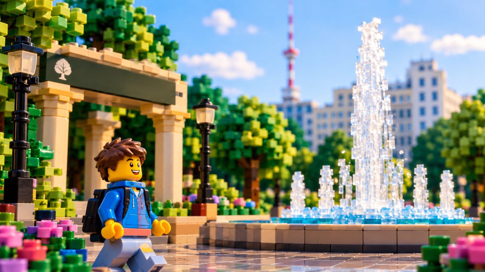
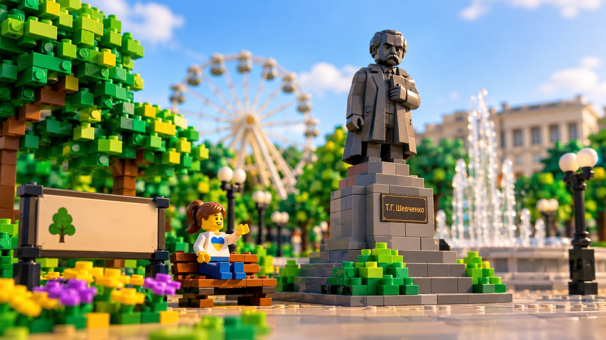
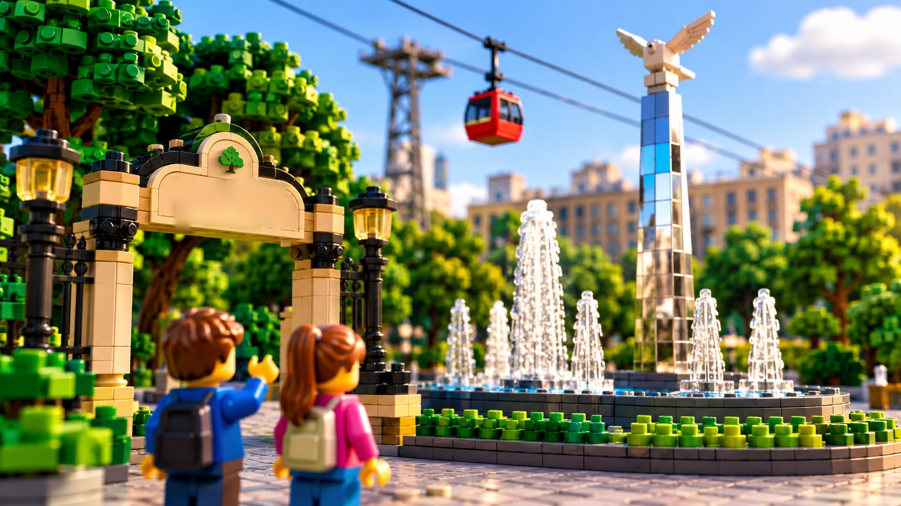
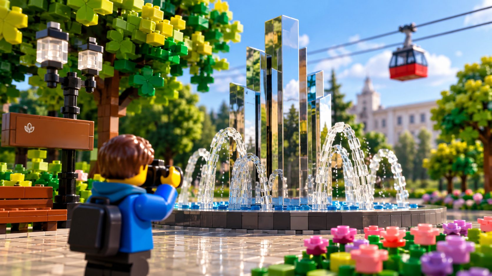
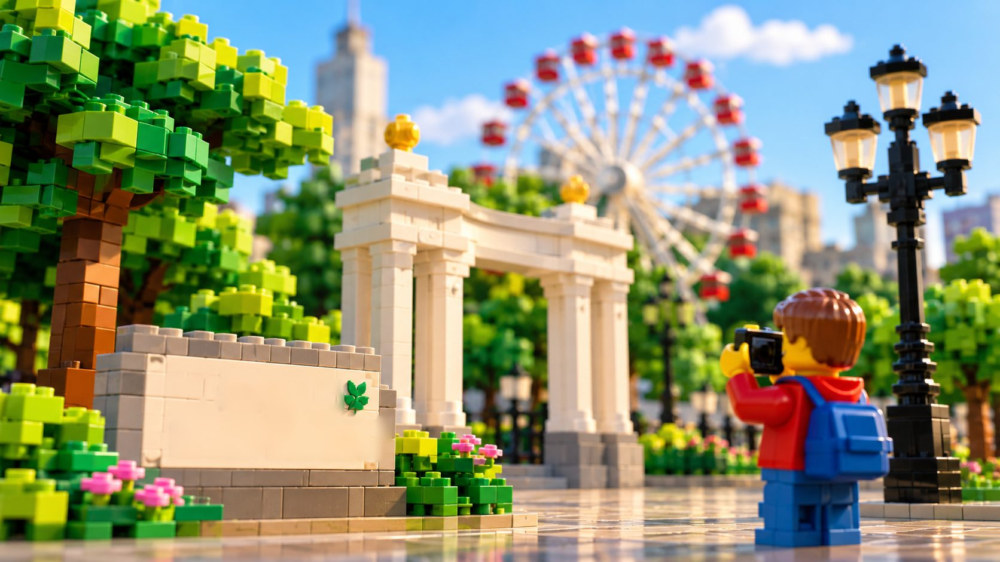

<meta charset="utf-8">
<meta name="viewport" content="width=device-width, initial-scale=1, viewport-fit=cover">
<title>Урок 5 · Місто з цеглинок</title>
<meta name="claude:viewport-fit-sides" content="cover">
<link rel="preconnect" href="https://fonts.googleapis.com">
<link rel="preconnect" href="https://fonts.gstatic.com" crossorigin>
<link rel="stylesheet" href="https://fonts.googleapis.com/css2?family=Days+One&family=Nunito:wght@400;600;700;800&family=JetBrains+Mono:wght@500;700&family=Press+Start+2P&display=swap">
<style>
/* Макет: прогулянка містом, зібраним із цеглинок (назву міста не пишемо — хай учні впізнають).
   Згори вниз, як сторінки інструкції до конструктора: кожна зупинка — крок уроку, номер — цеглинка 2×2.
   Палітра — чисті кольори цеглинок на світлій сіро-блакитній пластині. Сторінка навмисно лише світла
   (так просив викладач); темні тільки екран OLED і плата. */
:root {
  --bg: #F5F7FB;
  --plate: #FFFFFF;
  --plate-2: #EEF1F7;
  --line: #E2E7EF;
  --ink: #232A38;
  --muted: #6B7484;
  --red: #F2877B;
  --red-soft: #FDECE8;
  --yellow: #F8D877;
  --yellow-soft: #FFF7DD;
  --blue: #80B3F2;
  --blue-soft: #E8F1FD;
  --green: #7DCCA3;
  --green-soft: #E6F6ED;
  --tan: #EBD9B4;
  --red-ink: #C2493B;
  --blue-ink: #2F6DB5;
  --green-ink: #2E8A5C;
  --on: #232A38;
  --stud: rgba(255, 255, 255, .55);
  --oled-bg: #04070C;
  --oled-px: #DDF2FF;
  --display: 'Days One', 'Arial Black', Arial, sans-serif;
  --body: 'Nunito', 'Segoe UI', Arial, sans-serif;
  --mono: 'JetBrains Mono', Consolas, 'Courier New', monospace;
  --pixel: 'Press Start 2P', 'Courier New', monospace;
  color-scheme: light;
}
* { box-sizing: border-box; }
html { scroll-behavior: smooth; }
body {
  margin: 0; background: var(--bg); color: var(--ink);
  font: 400 17px/1.55 var(--body);
  padding-left: max(16px, env(safe-area-inset-left, 0px));
  padding-right: max(16px, env(safe-area-inset-right, 0px));
  padding-block: 0 80px;
  overflow-x: hidden;
  background-image: radial-gradient(circle at 12px 12px, rgba(255,255,255,.9) 0 4.5px, rgba(35,42,56,.035) 5px 6px, transparent 6.5px);
  background-size: 24px 24px;
}
body::before { content: ""; position: fixed; inset: 0 0 auto; height: env(safe-area-inset-top, 0px); z-index: 10; background: var(--plate); }
h1, h2, h3 { margin: 0; text-wrap: balance; font-weight: 400; }
p { margin: 0; }
a { color: var(--blue-ink); }
button { font: inherit; color: inherit; cursor: pointer; }
:focus-visible { outline: 3px solid var(--yellow); outline-offset: 3px; }
code, .mono { font-family: var(--mono); font-size: .9em; }
.wrap { max-width: 1140px; margin: 0 auto; }

/* ---------- цеглинка: студи зверху ---------- */
.studs { position: relative; }
.studs::before {
  content: ""; position: absolute; left: 14px; right: 14px; top: -9px; height: 10px;
  background: radial-gradient(ellipse 9px 10px at 50% 100%, var(--sc, var(--plate)) 0 8px, transparent 8.5px) 0 0 / 30px 10px repeat-x;
  filter: drop-shadow(0 -1px 0 rgba(24,33,45,.12));
}

/* ---------- верхня панель ---------- */
.topbar {
  position: sticky; top: env(safe-area-inset-top, 0px); z-index: 5;
  margin-inline: calc(-1 * max(16px, env(safe-area-inset-left, 0px))) calc(-1 * max(16px, env(safe-area-inset-right, 0px)));
  padding: 9px max(16px, env(safe-area-inset-right, 0px)) 9px max(16px, env(safe-area-inset-left, 0px));
  background: color-mix(in srgb, var(--plate) 93%, transparent);
  backdrop-filter: blur(8px);
  border-bottom: 3px solid var(--yellow); box-shadow: 0 6px 20px rgba(35,42,56,.04);
}
.topbar .wrap { display: flex; align-items: center; gap: 12px; flex-wrap: wrap; }
.brand { font-family: var(--display); font-size: 19px; color: var(--red-ink); white-space: nowrap; }
.brand small { font-family: var(--body); font-weight: 700; font-size: 13px; color: var(--muted); margin-left: 6px; }
.route { display: flex; gap: 5px; flex-wrap: wrap; margin-left: auto; }
.route a {
  display: inline-flex; align-items: center; gap: 5px; text-decoration: none; color: var(--ink);
  font-size: 13px; font-weight: 800; padding: 4px 9px 4px 4px; border-radius: 8px; background: var(--plate-2);
}
.route a b { display: grid; place-items: center; width: 20px; height: 20px; border-radius: 5px; font-family: var(--display); font-weight: 400; font-size: 11px; color: var(--on); background: var(--rc, var(--blue)); }
.route a:hover { background: var(--yellow-soft); }
.mute { border: 2px solid var(--line); background: var(--plate); border-radius: 99px; padding: 3px 10px; font-size: 13px; font-weight: 800; }

/* ---------- герой ---------- */
.hero { padding-block: 30px 6px; }
.hero-grid { display: grid; grid-template-columns: minmax(0, 1fr) minmax(0, 1.2fr); gap: 30px; align-items: center; }
.eyebrow { font-size: 13px; font-weight: 800; letter-spacing: .12em; text-transform: uppercase; color: var(--blue-ink); }
.hero h1 { font-family: var(--display); font-size: clamp(42px, 6.6vw, 80px); line-height: .98; margin-top: 10px; color: var(--ink); }
.hero h1 .b { display: inline-block; color: var(--on); background: linear-gradient(135deg, #F7A08F, #F2877B 60%, #F59BB0); padding: 0 .18em .06em; border-radius: .12em; margin-top: .1em; box-shadow: inset 0 -.09em 0 rgba(35,42,56,.1); }
.hero .lead { margin-top: 18px; font-size: 19px; max-width: 32em; }
.mission { margin-top: 20px; display: grid; grid-template-columns: 44px minmax(0, 1fr); gap: 12px; align-items: start; padding: 14px 16px; border-radius: 12px; background: var(--plate); border: 2px solid var(--line); }
.mission .ic { width: 44px; height: 44px; }
.mission b { display: block; font-size: 12.5px; letter-spacing: .1em; text-transform: uppercase; color: var(--muted); }
.photo { position: relative; border-radius: 14px; overflow: hidden; border: 4px solid var(--plate); box-shadow: 0 18px 40px rgba(35,42,56,.10); background: var(--plate-2); }
.photo img { display: block; width: 100%; height: auto; aspect-ratio: 1672 / 941; object-fit: cover; }
.photo .tag { position: absolute; left: 12px; bottom: 12px; padding: 5px 10px; border-radius: 8px; background: color-mix(in srgb, var(--plate) 90%, transparent); font-size: 13px; font-weight: 800; color: var(--ink); }
.hero .photo { transform: rotate(1.2deg); }
.hero .photo img { animation: kenburns 24s ease-in-out infinite alternate; }
@keyframes kenburns { from { transform: scale(1); } to { transform: scale(1.07) translate(-1.5%, -1%); } }

/* план дня цеглинками */
.day { margin-top: 26px; }
.day-row { display: flex; gap: 4px; align-items: stretch; }
.day-row .bk {
  position: relative; min-width: 0; padding: 10px 8px 8px; border-radius: 8px; color: var(--on); font-size: 13px; font-weight: 800; line-height: 1.2;
  box-shadow: inset 0 -4px 0 rgba(35,42,56,.08);
}
.day-row .bk small { display: block; font-weight: 600; opacity: .9; font-size: 12px; }
.day-row .bk::before {
  content: ""; position: absolute; left: 6px; right: 6px; top: -7px; height: 8px;
  background: radial-gradient(ellipse 7px 8px at 50% 100%, var(--c) 0 6px, transparent 6.5px) 0 0 / 22px 8px repeat-x;
}
.day-row .bk.y { color: var(--ink); }
.day-par { margin-top: 12px; display: flex; gap: 10px; align-items: center; font-size: 14px; color: var(--muted); }
.day-par i { flex: 1; height: 10px; border-radius: 5px; background: repeating-linear-gradient(90deg, var(--green) 0 18px, transparent 18px 24px); }

/* ---------- зупинки ---------- */
section.stop { padding-block: 60px 8px; scroll-margin-top: 74px; }
.stop-head { display: grid; grid-template-columns: auto minmax(0, 1fr) auto; gap: 16px; align-items: end; margin-bottom: 22px; }
.brick-no { width: 66px; height: 66px; position: relative; }
.brick-no svg { display: block; width: 100%; height: 100%; overflow: visible; }
.place { font-size: 13px; font-weight: 800; letter-spacing: .1em; text-transform: uppercase; color: var(--muted); }
.stop h2 { font-family: var(--display); font-size: clamp(28px, 4.2vw, 46px); line-height: 1.08; margin-top: 2px; }
.sub { margin-top: 6px; color: var(--muted); max-width: 46em; }
.panel { background: var(--plate); border: 2px solid var(--line); border-radius: 14px; padding: 18px; min-width: 0; }
.two { display: grid; grid-template-columns: minmax(0, 1.25fr) minmax(0, 1fr); gap: 16px; align-items: start; }
.lbl { font-size: 12.5px; font-weight: 800; letter-spacing: .1em; text-transform: uppercase; color: var(--muted); }
.note { margin-top: 10px; font-size: 14px; color: var(--muted); }
.banner { margin-bottom: 18px; }
.banner { max-width: 980px; margin-inline: auto !important; }
.fact { display: grid; grid-template-columns: 36px minmax(0, 1fr); gap: 10px; align-items: start; padding: 12px 14px; border-radius: 12px; background: var(--yellow-soft); font-size: 15px; }
.fact svg { width: 36px; height: 36px; }
.btn {
  border: 0; border-radius: 10px; padding: 10px 16px; font-weight: 800; font-size: 15px; background: var(--blue); color: var(--on);
  box-shadow: inset 0 -4px 0 rgba(35,42,56,.1); display: inline-flex; align-items: center; gap: 8px;
}
.btn:active { transform: translateY(2px); box-shadow: inset 0 -2px 0 rgba(0,0,0,.2); }
.btn.red { background: var(--red); }
.btn.green { background: var(--green); }
.btn.yellow { background: var(--yellow); color: var(--ink); }
.ghost { border: 2px solid var(--line); background: var(--plate); border-radius: 10px; padding: 8px 12px; font-weight: 800; font-size: 14px; }
.ghost[aria-pressed="true"] { border-color: var(--blue); background: var(--blue-soft); }
.chips { display: flex; flex-wrap: wrap; gap: 6px; }
.chips span { font-size: 12.5px; font-weight: 800; padding: 3px 9px; border-radius: 6px; background: var(--plate-2); }

/* ---------- 1. команда ---------- */
.team { display: grid; grid-template-columns: repeat(auto-fill, minmax(min(100%, 320px), 1fr)); gap: 16px; }
.prof { background: var(--plate); border: 2px solid var(--line); border-radius: 14px; display: flex; flex-direction: column; min-width: 0; --sc: var(--c); }
.prof .top { display: grid; grid-template-columns: 96px minmax(0, 1fr); gap: 14px; padding: 16px 16px 12px; align-items: center; background: var(--c-soft); border-radius: 12px 12px 0 0; }
.prof .face { width: 96px; height: 96px; border-radius: 12px; background: var(--plate); border: 3px solid var(--c); overflow: hidden; }
.prof .face svg { display: block; width: 100%; height: 100%; }
.prof .nick { font-family: var(--display); font-size: 21px; line-height: 1.12; color: var(--c-ink); }
.prof .who { margin-top: 4px; font-size: 14px; color: var(--muted); }
.prof .who b { color: var(--ink); }
.prof .body { padding: 14px 16px 16px; display: grid; gap: 10px; flex: 1; align-content: start; }
.prof .task { font-size: 15.5px; }
.prof .task b { color: var(--c-ink); }
.prof .ask { font-size: 14.5px; color: var(--muted); border-left: 4px solid var(--c); padding-left: 10px; }
.prof .done { justify-self: start; border: 2px solid var(--c); background: var(--plate); border-radius: 99px; padding: 5px 14px; font-size: 14px; font-weight: 800; color: var(--c-ink); }
.prof .done[aria-pressed="true"] { background: var(--c); color: var(--on); }
.prof .debt { display: inline-block; font-size: 11.5px; font-weight: 800; letter-spacing: .08em; text-transform: uppercase; padding: 2px 7px; border-radius: 5px; background: var(--red); color: var(--on); margin-right: 4px; vertical-align: 1px; }
.p-anna { --c: #80B3F2; --c-soft: #EAF2FD; --c-ink: #2F6DB5; }
.p-ole  { --c: #7DCCA3; --c-soft: #E7F6EE; --c-ink: #2E8A5C; }
.p-den  { --c: #F2877B; --c-soft: #FDEDEA; --c-ink: #C2493B; }
.p-eve  { --c: #EBBE66; --c-soft: #FFF6E0; --c-ink: #9A6F12; }
.p-dar  { --c: #C9A6EC; --c-soft: #F4EDFC; --c-ink: #7E52B0; }
.wiggle .fig { animation: wig 1s ease-in-out infinite; transform-origin: 50px 100px; }
@keyframes wig { 0%,100% { transform: rotate(-4deg); } 50% { transform: rotate(4deg) translateY(-2px); } }

/* ---------- 2. пам'ять ---------- */
.ram-plate { padding: 0; overflow: hidden; }
.ram-plate canvas { display: block; width: 100%; height: auto; aspect-ratio: 2 / 1; image-rendering: auto; background: #A8B3BF; }
.ram-bar { display: flex; flex-wrap: wrap; gap: 10px 18px; align-items: baseline; padding: 12px 16px; border-top: 2px solid var(--line); }
.ram-big { font-family: var(--display); font-size: clamp(30px, 5vw, 42px); line-height: 1; font-variant-numeric: tabular-nums; }
.ram-big.warn { color: var(--red-ink); }
.ram-msg { flex: 1 1 220px; font-size: 14.5px; color: var(--muted); }
.types { display: grid; grid-template-columns: repeat(2, minmax(0, 1fr)); gap: 8px; }
.types button {
  display: grid; grid-template-columns: 30px minmax(0, 1fr) auto; gap: 8px; align-items: center; text-align: left;
  border: 2px solid var(--line); background: var(--plate); border-radius: 10px; padding: 8px 10px; font-size: 14px; font-weight: 700; min-width: 0;
}
.types button code { font-size: 13px; overflow-wrap: anywhere; }
.types button i { width: 30px; height: 22px; border-radius: 4px; background: var(--tc); box-shadow: inset 0 -3px 0 rgba(0,0,0,.18); }
.types button b { font-family: var(--mono); font-size: 13px; color: var(--muted); white-space: nowrap; }
.types button:hover { border-color: var(--tc); }
.types .wide { grid-column: 1 / -1; }
.ram-tools { display: flex; flex-wrap: wrap; gap: 8px; margin-top: 12px; }

/* ---------- 3. баги ---------- */
.anatomy { list-style: none; margin: 0; padding: 0; display: grid; gap: 8px; counter-reset: a; }
.anatomy li { counter-increment: a; display: grid; grid-template-columns: 34px minmax(0, 1fr); gap: 10px; align-items: start; padding: 10px 12px; border-radius: 10px; background: var(--plate); border: 2px solid var(--line); cursor: pointer; transition: border-color .15s, background .15s; }
.anatomy li::before { content: counter(a); width: 34px; height: 34px; border-radius: 7px; display: grid; place-items: center; font-family: var(--display); color: var(--on); background: var(--green); box-shadow: inset 0 -3px 0 rgba(35,42,56,.1); }
.anatomy li b { display: block; }
.anatomy li span { font-size: 14px; color: var(--muted); }
.anatomy li.hl { border-color: var(--green); background: var(--green-soft); }
.passport { background: #FFFDF5; border: 2px dashed #C9B47A; border-radius: 14px; padding: 18px; position: relative; min-width: 0; }
.passport h3 { font-family: var(--display); font-size: 21px; display: flex; gap: 10px; align-items: center; }
.passport h3 svg { width: 40px; height: 40px; flex: none; }
.pf { display: grid; gap: 4px; margin-top: 12px; }
.pf label { font-size: 12.5px; font-weight: 800; letter-spacing: .08em; text-transform: uppercase; color: var(--muted); }
.pf input, .pf textarea, .pf select {
  width: 100%; font: 600 15px/1.45 var(--body); color: var(--ink); background: var(--plate);
  border: 2px solid var(--line); border-radius: 8px; padding: 7px 10px; resize: vertical;
}
.pf.hl input, .pf.hl textarea, .pf.hl select { border-color: var(--green); box-shadow: 0 0 0 3px var(--green-soft); }
.pf-row { display: grid; grid-template-columns: minmax(0, 1fr) minmax(0, 1fr); gap: 10px; }
.pass-tools { display: flex; flex-wrap: wrap; gap: 8px; margin-top: 14px; align-items: center; }
.stamp { position: absolute; right: 16px; top: 14px; transform: rotate(8deg); border: 3px solid var(--green-ink); color: var(--green-ink); font-family: var(--display); font-size: 14px; padding: 3px 8px; border-radius: 6px; opacity: .85; }
.copied { font-size: 14px; font-weight: 800; color: var(--green-ink); }

/* ---------- 4. інструкція збирання ---------- */
.booklet { background: var(--plate); border: 2px solid var(--line); border-radius: 14px; overflow: hidden; }
.bk-page { display: grid; grid-template-columns: minmax(0, 1fr) minmax(0, 1.05fr); min-height: 330px; }
.bk-art { background: #F6F8FB; border-right: 2px solid var(--line); position: relative; display: grid; place-items: center; padding: 14px; }
.bk-art svg { width: 100%; max-width: 440px; height: auto; display: block; }
.bk-step { position: absolute; left: 14px; top: 10px; font-family: var(--display); font-size: 54px; line-height: 1; color: var(--ink); }
.bk-parts { position: absolute; right: 12px; top: 12px; display: flex; gap: 6px; flex-wrap: wrap; justify-content: flex-end; max-width: 60%; }
.bk-parts span { font-family: var(--mono); font-size: 12px; font-weight: 700; padding: 3px 7px; border-radius: 6px; background: var(--plate); border: 2px solid var(--line); }
.bk-text { padding: 20px; display: grid; gap: 12px; align-content: start; min-width: 0; }
.bk-text h3 { font-family: var(--display); font-size: 24px; }
.bk-text ul { margin: 0; padding-left: 20px; display: grid; gap: 5px; }
.warn { display: grid; grid-template-columns: 30px minmax(0, 1fr); gap: 10px; padding: 10px 12px; border-radius: 10px; background: var(--red-soft); font-size: 14.5px; }
.warn svg { width: 30px; height: 30px; }
.bk-nav { display: flex; align-items: center; gap: 10px; padding: 12px 16px; border-top: 2px solid var(--line); flex-wrap: wrap; }
.bk-dots { display: flex; gap: 6px; margin: 0 auto; }
.bk-dots button { width: 30px; height: 14px; border-radius: 4px; border: 0; background: var(--plate-2); box-shadow: inset 0 -3px 0 rgba(0,0,0,.08); }
.bk-dots button[aria-current="true"] { background: var(--yellow); }
.shop { display: grid; gap: 6px; margin-top: 4px; }
.shop label { display: grid; grid-template-columns: 22px minmax(0, 1fr); gap: 8px; font-size: 14.5px; align-items: start; }
.shop input { width: 18px; height: 18px; accent-color: var(--green); margin: 2px 0 0; }

/* ---------- 5. пайка ---------- */
.solder-board { padding: 0; overflow: hidden; }
.solder-board svg { display: block; width: 100%; height: auto; }
.joint { cursor: pointer; }
.joint:hover .ring { stroke: var(--yellow); stroke-width: 4; }
.joint .ring { fill: none; stroke: transparent; stroke-width: 3; transition: stroke .15s; }
.joint .mark { opacity: 0; transition: opacity .2s; }
.joint.found .mark { opacity: 1; }
.solder-bar { display: flex; flex-wrap: wrap; gap: 10px; align-items: center; padding: 12px 16px; border-top: 2px solid var(--line); }
.score { font-family: var(--display); font-size: 22px; }
.steps { list-style: none; margin: 0; padding: 0; display: grid; gap: 8px; counter-reset: s; }
.steps li { counter-increment: s; display: grid; grid-template-columns: 30px minmax(0, 1fr); gap: 10px; align-items: start; font-size: 15.5px; }
.steps li::before { content: counter(s); width: 30px; height: 30px; border-radius: 6px; display: grid; place-items: center; font-family: var(--display); font-size: 14px; color: var(--on); background: var(--red); box-shadow: inset 0 -3px 0 rgba(35,42,56,.1); }
.rules { display: grid; gap: 8px; margin-top: 14px; }
.rule { display: grid; grid-template-columns: 34px minmax(0, 1fr); gap: 10px; align-items: start; font-size: 14.5px; }
.rule svg { width: 34px; height: 34px; }

/* повна схема + чекліст дротів */
.scheme { margin-top: 18px; display: grid; grid-template-columns: minmax(0, 1fr); gap: 16px; }
.scheme-scroll { overflow-x: auto; }
.scheme-scroll svg { min-width: 640px; }
.mfilter { display: flex; flex-wrap: wrap; gap: 6px; padding: 12px 14px 0; }
.mfilter button { border: 2px solid var(--line); background: var(--plate); border-radius: 99px; padding: 4px 12px; font-size: 13.5px; font-weight: 800; }
.mfilter button[aria-pressed="true"] { border-color: var(--ink); background: var(--yellow-soft); }
#wiring .dim { opacity: .12; transition: opacity .2s; }
.wires { grid-template-columns: repeat(auto-fill, minmax(min(100%, 300px), 1fr)); align-items: start; }
.wgroup h3 { cursor: pointer; }
.scheme-draw { background: var(--plate); border: 2px solid var(--line); border-radius: 14px; overflow: hidden; min-width: 0; }
.scheme-draw svg { display: block; width: 100%; height: auto; }
.wire-ctl { display: flex; flex-wrap: wrap; gap: 10px; align-items: center; padding: 12px 14px; border-top: 2px solid var(--line); }
.wiring .w { cursor: pointer; }
.wiring .w path { transition: stroke-width .15s, filter .15s; }
.wiring .w:hover path { stroke-width: 8; }
.wiring .w.flash path { animation: wflash .9s ease-in-out; }
@keyframes wflash { 50% { filter: drop-shadow(0 0 6px #F8D877) brightness(1.15); } }
.wiring .w-sig { transition: stroke .2s; }
.wiring.on .w-sig { filter: drop-shadow(0 0 4px #B48CE6); }
.wiring .w-relled { transition: fill .2s; }
.wiring.on .w-relled { fill: #F2877B; }
.wiring .w-load { stroke-dasharray: 8 10; }
.wiring.on .w-load { animation: flow .6s linear infinite; }
@keyframes flow { to { stroke-dashoffset: -18; } }
.wiring .w-amp { transition: fill .2s; }
.wiring.on .w-amp { fill: #F8D877; }
.wiring .w-ampglow { transition: opacity .2s; }
.wiring.on .w-ampglow { opacity: .55; }
.wires { display: grid; gap: 10px; }
.wgroup { background: var(--plate); border: 2px solid var(--line); border-radius: 12px; padding: 10px 12px; }
.wgroup h3 { font-family: var(--display); font-size: 16px; display: flex; align-items: center; gap: 8px; margin-bottom: 6px; }
.wgroup h3 i { width: 14px; height: 14px; border-radius: 4px; background: var(--wc); }
.wgroup label { display: grid; grid-template-columns: 20px minmax(0, 1fr); gap: 8px; align-items: start; font-size: 14px; padding: 3px 0; cursor: pointer; }
.wgroup input { width: 17px; height: 17px; accent-color: var(--green-ink); margin: 2px 0 0; }
.wgroup label:has(input:checked) span { color: var(--muted); text-decoration: line-through; text-decoration-color: var(--green-ink); }
.wgroup code { font-weight: 700; }
.wcount { font-size: 14px; font-weight: 800; color: var(--green-ink); }
@media (max-width: 880px) { .scheme { grid-template-columns: minmax(0, 1fr); } }

/* ---------- 6. самоперевірка ---------- */
.mirror { display: grid; grid-template-columns: minmax(0, 1fr) minmax(0, 1fr); gap: 16px; align-items: start; }
.devbox { background: #2B3442; border-radius: 16px; padding: 16px; display: grid; gap: 14px; box-shadow: inset 0 -6px 0 rgba(0,0,0,.25); }
.devbox canvas { width: 100%; max-width: 100%; aspect-ratio: 2 / 1; height: auto; image-rendering: pixelated; background: var(--oled-bg); border-radius: 4px; box-shadow: 0 0 0 6px #0B0F16; }
.dev-ctl { display: flex; flex-wrap: wrap; gap: 10px; align-items: center; }
.hwbtn { width: 58px; height: 58px; border-radius: 50%; border: 0; background: radial-gradient(circle at 40% 35%, #FF6B6B, #B3121A 70%); color: #fff; font-family: var(--display); font-size: 18px; box-shadow: 0 5px 0 #6E0B10, 0 0 0 5px #111821; }
.hwbtn.b { background: radial-gradient(circle at 40% 35%, #6FA8FF, #0B4C9E 70%); box-shadow: 0 5px 0 #062C5C, 0 0 0 5px #111821; }
.hwbtn:active, .hwbtn.held { transform: translateY(4px); box-shadow: 0 1px 0 #6E0B10, 0 0 0 5px #111821; }
.hwbtn.b:active, .hwbtn.b.held { box-shadow: 0 1px 0 #062C5C, 0 0 0 5px #111821; }
.leds { display: flex; gap: 14px; margin-left: auto; color: #C9D3E0; font-size: 13px; font-weight: 700; }
.leds span { display: inline-flex; align-items: center; gap: 6px; }
.leds i { width: 14px; height: 14px; border-radius: 50%; background: #4A1C1C; box-shadow: inset 0 0 0 2px rgba(0,0,0,.3); }
.leds i.on { background: #FF3B2F; box-shadow: 0 0 10px #FF3B2F; }
.leds i.snd { background: #213A2A; }
.leds i.snd.on { background: #3BE07A; box-shadow: 0 0 10px #3BE07A; }
.faults { display: grid; grid-template-columns: repeat(2, minmax(0, 1fr)); gap: 8px; }
.faults label { display: grid; grid-template-columns: 22px minmax(0, 1fr); gap: 8px; align-items: start; padding: 8px 10px; border-radius: 10px; background: var(--plate); border: 2px solid var(--line); font-size: 14px; font-weight: 700; cursor: pointer; }
.faults label small { display: block; font-weight: 600; color: var(--muted); font-size: 12.5px; }
.faults input { width: 18px; height: 18px; accent-color: var(--red); margin: 2px 0 0; }
.faults label:has(input:checked) { border-color: var(--red); background: var(--red-soft); }
.log { font-family: var(--mono); font-size: 13px; background: #0F1620; color: #CFE3F5; border-radius: 12px; padding: 10px 12px; height: 200px; overflow: auto; }
.log div { white-space: pre-wrap; }
.log .ok { color: #7BE3A0; }
.log .bad { color: #FF8A80; }
.log .hint { color: #FFD66B; }
.honest { display: grid; grid-template-columns: repeat(2, minmax(0, 1fr)); gap: 10px; margin-top: 14px; }
.honest div { padding: 12px 14px; border-radius: 12px; background: var(--blue-soft); font-size: 14.5px; }
.honest code { font-weight: 700; color: var(--blue); }

/* ---------- 7. челендж ---------- */
.rulesbox { background: var(--yellow-soft); border: 2px solid #E8C84A; border-radius: 14px; padding: 18px; display: grid; gap: 10px; }
.rulesbox h3 { font-family: var(--display); font-size: 22px; }
.rulesbox ol { margin: 0; padding-left: 22px; display: grid; gap: 6px; }
.golden { padding: 10px 12px; border-radius: 10px; background: var(--plate); font-weight: 700; border-left: 5px solid var(--red); }
.wheel-wrap { display: grid; grid-template-columns: minmax(0, 1fr) minmax(0, 1fr); gap: 16px; align-items: center; margin-top: 16px; }
.wheel-wrap svg { display: block; width: 100%; max-width: 380px; height: auto; margin: 0 auto; overflow: visible; }
#wheelRot { transition: transform 3.2s cubic-bezier(.15, .85, .2, 1); transform-origin: 200px 190px; }
.cabin-up { transition: transform 3.2s cubic-bezier(.15, .85, .2, 1); }
.idea { padding: 18px; border-radius: 14px; background: var(--plate); border: 2px solid var(--line); display: grid; gap: 8px; min-height: 180px; align-content: start; }
.idea .ic { font-size: 40px; line-height: 1; }
.idea h3 { font-family: var(--display); font-size: 24px; }
.idea .lvl { font-size: 13px; font-weight: 800; color: var(--muted); }
.pad { margin-top: 16px; display: grid; grid-template-columns: minmax(0, 1.4fr) minmax(0, 1fr); gap: 16px; align-items: start; }
.pad-box { background: #2B3442; border-radius: 14px; padding: 14px; box-shadow: inset 0 -6px 0 rgba(0,0,0,.25); }
.pad-box canvas { display: block; width: 100%; height: auto; aspect-ratio: 2 / 1; image-rendering: pixelated; border-radius: 4px; cursor: crosshair; touch-action: none; background: var(--oled-bg); }
.pad-tools { display: flex; flex-wrap: wrap; gap: 8px; margin-top: 12px; }
.ask-ai { margin-top: 12px; font-size: 14.5px; padding: 12px 14px; border-radius: 12px; background: var(--plate-2); }
.ask-ai b { display: block; margin-bottom: 4px; }

/* ---------- 8. DoD ---------- */
.dod { display: grid; grid-template-columns: repeat(auto-fill, minmax(min(100%, 300px), 1fr)); gap: 10px; }
.dod label { display: grid; grid-template-columns: 26px minmax(0, 1fr); gap: 10px; align-items: start; padding: 12px 14px; border-radius: 12px; background: var(--plate); border: 2px solid var(--line); cursor: pointer; font-size: 15.5px; }
.dod input { width: 22px; height: 22px; accent-color: var(--green); margin: 1px 0 0; }
.dod label:has(input:checked) { background: var(--green-soft); border-color: var(--green); }
.next { margin-top: 18px; display: grid; grid-template-columns: 70px minmax(0, 1fr); gap: 16px; align-items: center; }
.next svg { width: 70px; height: auto; }
footer { margin-top: 56px; padding-top: 18px; border-top: 2px solid var(--line); font-size: 14px; color: var(--muted); }

/* ---------- іграшки ---------- */
.land { border: 0; background: none; padding: 0; width: 120px; cursor: pointer; border-radius: 12px; transition: transform .15s; }
.land:hover { transform: translateY(-3px) rotate(-2deg); }
.land:active { transform: scale(.94); }
.land svg { display: block; width: 100%; height: auto; overflow: visible; }
.land .hint { display: block; font-size: 11.5px; font-weight: 800; color: var(--muted); text-align: center; margin-top: 2px; }
.land.pop svg { animation: popup .5s cubic-bezier(.3,1.7,.5,1); }
@keyframes popup { 0% { transform: scale(1); } 40% { transform: scale(1.12) translateY(-6px); } 100% { transform: scale(1); } }
.land .lit { transition: fill .3s; }
.land .spin { transform-box: fill-box; transform-origin: 50% 50%; }
.land.go .spin { animation: rot 1.6s cubic-bezier(.3,.9,.4,1); }
@keyframes rot { to { transform: rotate(360deg); } }
.land .jet { transform-box: fill-box; transform-origin: 50% 100%; }
.land.go .jet { animation: jet 1.2s ease-out; }
@keyframes jet { 0%,100% { transform: scaleY(1); } 30% { transform: scaleY(1.6); } }
.land .cab { transform: translateX(0); }
.land.go .cab { animation: cab 2s ease-in-out; }
@keyframes cab { 50% { transform: translate(64px, -22px); } }
.land .bugw { transform-box: fill-box; transform-origin: 50% 50%; }
.land.go .bugw { animation: flap .12s linear 10 alternate; }
@keyframes flap { to { transform: scaleX(.3); } }

.ribbon { display: flex; justify-content: center; gap: clamp(4px, 1.4vw, 12px); padding-top: 46px; flex-wrap: wrap; }
.rb { border: 0; background: none; padding: 0; width: 46px; cursor: pointer; }
.rb svg { display: block; width: 100%; height: auto; overflow: visible; transition: transform .25s cubic-bezier(.3,1.8,.5,1); }
.rb:hover svg { transform: translateY(-4px); }
.rb.up svg { transform: translateY(-14px) rotate(-8deg); }

.squirrel { position: fixed; z-index: 6; border: 0; background: none; padding: 0; cursor: pointer; width: 84px;
  left: max(8px, env(safe-area-inset-left, 0px)); bottom: calc(6px + env(safe-area-inset-bottom, 0px)); }
.squirrel svg { display: block; width: 100%; height: auto; overflow: visible; }
.squirrel .tail { transform-origin: 30px 70px; animation: tail 2.2s ease-in-out infinite; }
@keyframes tail { 0%,100% { transform: rotate(-4deg); } 50% { transform: rotate(6deg); } }
.squirrel .eye { transform-box: fill-box; transform-origin: 50% 50%; animation: sqblink 5s infinite; }
@keyframes sqblink { 0%,93%,100% { transform: scaleY(1); } 96% { transform: scaleY(.1); } }
.squirrel.jump svg { animation: sqjump .6s cubic-bezier(.3,1.6,.5,1); }
@keyframes sqjump { 40% { transform: translateY(-30px) rotate(-6deg); } }
.squirrel.spin svg { animation: sqspin 1s ease-in-out; }
@keyframes sqspin { 50% { transform: translateY(-40px) rotate(180deg); } 100% { transform: rotate(360deg); } }

.bubble { position: absolute; z-index: 20; max-width: 260px; padding: 9px 13px; border-radius: 12px; background: var(--ink); color: #fff; font-size: 14px; font-weight: 700; line-height: 1.35; pointer-events: none; animation: bubIn .25s cubic-bezier(.3,1.6,.5,1); box-shadow: 0 8px 22px rgba(24,33,45,.25); }
.bubble small { display: block; font-weight: 500; opacity: .85; }
@keyframes bubIn { from { transform: scale(.6) translateY(8px); opacity: 0; } }
.chip-fly { position: absolute; z-index: 19; pointer-events: none; width: 16px; height: 10px; border-radius: 2px; animation: fly 1s ease-out forwards; }
@keyframes fly { to { transform: translate(var(--dx), var(--dy)) rotate(var(--rot)); opacity: 0; } }
.confetti { position: fixed; top: -30px; z-index: 30; pointer-events: none; width: 22px; height: 14px; border-radius: 3px; box-shadow: inset 0 -3px 0 rgba(0,0,0,.2); animation: fall linear forwards; }
@keyframes fall { to { transform: translateY(calc(100vh + 60px)) rotate(540deg); } }

@media (max-width: 880px) {
  .hero-grid, .two, .mirror, .wheel-wrap, .pad, .bk-page { grid-template-columns: minmax(0, 1fr); }
  .bk-art { border-right: 0; border-bottom: 2px solid var(--line); min-height: 260px; }
  .route { margin-left: 0; }
}
@media (max-width: 540px) {
  .stop-head { grid-template-columns: auto minmax(0, 1fr); }
  .land { grid-column: 1 / -1; justify-self: end; width: 92px; margin-top: -6px; }
  .brick-no { width: 54px; height: 54px; }
  .prof .top { grid-template-columns: 78px minmax(0, 1fr); }
  .prof .face { width: 78px; height: 78px; }
  .types, .faults, .honest, .pf-row { grid-template-columns: minmax(0, 1fr); }
  .day-row .bk { font-size: 11.5px; padding-inline: 5px; }
  .day-row .bk small { display: none; }
  .squirrel { width: 62px; }
  .bk-step { font-size: 40px; }
}
@media (prefers-reduced-motion: reduce) {
  *, *::before, *::after { animation: none !important; transition: none !important; }
}
</style>

<header class="topbar">
  <div class="wrap">
    <div class="brand">STEM-93 <small>Урок 5 · Місто з цеглинок</small></div>
    <nav class="route" aria-label="Маршрут уроку">
      <a href="#team" style="--rc:#F2877B"><b>1</b>Арка</a>
      <a href="#memory" style="--rc:#80B3F2"><b>2</b>Пам'ять</a>
      <a href="#bugs" style="--rc:#7DCCA3"><b>3</b>Зоопарк</a>
      <a href="#box" style="--rc:#EBBE66"><b>4</b>Будинок</a>
      <a href="#solder" style="--rc:#F2877B"><b>5</b>Канатка</a>
      <a href="#mirror" style="--rc:#80B3F2"><b>6</b>Фонтан</a>
      <a href="#wheel" style="--rc:#7DCCA3"><b>7</b>Колесо</a>
      <a href="#done" style="--rc:#EBBE66"><b>8</b>Фініш</a>
    </nav>
  </div>
</header>

<main class="wrap">
  <!-- ================= ГЕРОЙ ================= -->
  <section class="hero">
    <div class="hero-grid">
      <div>
        <div class="eyebrow">Урок 5 · Smart School Bell</div>
        <h1>Збери<br><span class="b">в корпус</span></h1>
        <p class="lead">Сьогодні гуляємо містом, зібраним із цеглинок. Арка, телевежа, фонтан… Впізнали, яке це місто? А наш дзвоник сьогодні теж стане цілим: переїде з макетки в коробку, отримає паяні дроти й перевірить сам себе.</p>
        <div class="mission">
          <svg class="ic" viewBox="0 0 44 44" aria-hidden="true"><rect x="4" y="14" width="36" height="26" rx="4" fill="#F8D877"/><rect x="4" y="34" width="36" height="6" rx="2" fill="#000" opacity=".15"/><rect x="9" y="8" width="10" height="8" rx="3" fill="#F8D877"/><rect x="25" y="8" width="10" height="8" rx="3" fill="#F8D877"/><path d="M15 27 l5 5 l10 -11" fill="none" stroke="#18212D" stroke-width="3.5" stroke-linecap="round" stroke-linejoin="round"/></svg>
          <div><b>Місія</b>Розширити отвори в коробці, спаяти всі з'єднання, закріпити плати й перевірити, що після збирання все працює.</div>
        </div>
      </div>
      <figure class="photo" style="margin:0">
        
        <span class="tag">Арка саду · вхід на маршрут</span>
      </figure>
    </div>

    <div class="day" aria-label="План уроку">
      <div class="lbl" style="margin-bottom:14px">План дня, хвилини — ширина цеглинки</div>
      <div class="day-row">
        <div class="bk" style="--c:#F2877B;background:#F2877B;flex:15">Борги<small>15 хв</small></div>
        <div class="bk y" style="--c:#F8D877;background:#F8D877;flex:5">⚠<small>5</small></div>
        <div class="bk" style="--c:#EBBE66;background:#EBBE66;flex:15">Отвори<small>15 хв</small></div>
        <div class="bk" style="--c:#F2877B;background:#F2877B;flex:30">Пайка<small>30 хв</small></div>
        <div class="bk" style="--c:#80B3F2;background:#80B3F2;flex:10">Кріплення<small>10 хв</small></div>
        <div class="bk" style="--c:#7DCCA3;background:#7DCCA3;flex:10">Тест<small>10 хв</small></div>
      </div>
      <div class="day-par"><b style="color:var(--green-ink)">Паралельно:</b><i></i><span>Arduino Challenge на другій платі</span></div>
    </div>
  </section>

  <!-- ================= 1. КОМАНДА ================= -->
  <section class="stop" id="team">
    <div class="stop-head">
      <div class="brick-no" data-n="1" data-c="#F2877B"></div>
      <div>
        <div class="place">Арка саду · збір команди</div>
        <h2>Команда і борги</h2>
        <p class="sub">Двоє з нас винні класу по розповіді з уроку 4. Починаємо з них, поки паяльники гріються.</p>
      </div>
    </div>
    <div class="team">
      <article class="prof p-anna studs">
        <div class="top">
          <div class="face" data-fig="anna"></div>
          <div><div class="nick">Байт-Цеглинка</div><div class="who"><b>Анна</b> · @anettt_ti · код</div></div>
        </div>
        <div class="body">
          <p class="task"><span class="debt">борг</span> <b>Завдання:</b> що таке змінні, які бувають типи даних в Arduino і чому Uno треба економити пам'ять. Поясни на простих прикладах.</p>
          <p class="ask">Допоможе зупинка 2: там пам'ять Uno складена з цеглинок, по штирку на байт.</p>
          <div class="chips"><span>bool · byte · int · long</span><span>2048 Б</span><span>F("…")</span></div>
          <button class="done" type="button" aria-pressed="false">Виступ ✓</button>
        </div>
      </article>
      <article class="prof p-ole studs">
        <div class="top">
          <div class="face" data-fig="ole"></div>
          <div><div class="nick">Ловець Жуків</div><div class="who"><b>Олекса</b> · @olemsa1147 · QA</div></div>
        </div>
        <div class="body">
          <p class="task"><span class="debt">борг</span> <b>Завдання:</b> розкажи, з чого складається баг. Чим добрий баг-репорт відрізняється від «щось не працює»?</p>
          <p class="ask">Після самоперевірки кожне <code>NO</code> на екрані — новий жук. Паспорт жука на зупинці 3.</p>
          <div class="chips"><span>кроки відтворення</span><span>очікувано / фактично</span><span>серйозність</span></div>
          <button class="done" type="button" aria-pressed="false">Виступ ✓</button>
        </div>
      </article>
      <article class="prof p-den studs">
        <div class="top">
          <div class="face" data-fig="den"></div>
          <div><div class="nick">Канатний Паяльник</div><div class="who"><b>Денис</b> · @deny_19 · залізо</div></div>
        </div>
        <div class="body">
          <p class="task"><b>Сьогодні:</b> ти знаєш реле зсередини. Простеж, щоб дроти D4, VCC і GND реле були спаяні надійно, а після пайки реле клацало.</p>
          <p class="ask">На тесті реле має клацнути двічі: увімкнулось і вимкнулось.</p>
          <div class="chips"><span>реле на D4</span><span>LOW = УВІМК</span><span>термоусадка</span></div>
          <button class="done" type="button" aria-pressed="false">Готово ✓</button>
        </div>
      </article>
      <article class="prof p-eve studs">
        <div class="top">
          <div class="face" data-fig="eve"></div>
          <div><div class="nick">Прораб Спринту</div><div class="who"><b>Евеліна</b> · @llinave · процеси</div></div>
        </div>
        <div class="body">
          <p class="task"><b>Сьогодні:</b> веди список «чого бракує»: болтики, стійки, термоусадка. Наприкінці уроку — картка в Trello «Замовити».</p>
          <p class="ask">Список уже чекає на сторінці 1 інструкції збирання (зупинка 4).</p>
          <div class="chips"><span>список закупівель</span><span>Trello</span><span>хто що робить</span></div>
          <button class="done" type="button" aria-pressed="false">Готово ✓</button>
        </div>
      </article>
      <article class="prof p-dar studs">
        <div class="top">
          <div class="face" data-fig="dar"></div>
          <div><div class="nick">Фото-Фонтан</div><div class="who"><b>Дарина</b> · @darsilzx08 · звук і стиль</div></div>
        </div>
        <div class="body">
          <p class="task"><b>Сьогодні:</b> фоторепортаж «до / під час / після»: макетка, пайка крупним планом, готова коробка.</p>
          <p class="ask">Найкращий кадр — у статтю. Як фігурка біля фонтану на зупинці 6 📷</p>
          <div class="chips"><span>до / після</span><span>руки й паяльник</span><span>фото для статті</span></div>
          <button class="done" type="button" aria-pressed="false">Готово ✓</button>
        </div>
      </article>
    </div>
  </section>

  <!-- ================= 2. ПАМ'ЯТЬ ================= -->
  <section class="stop" id="memory">
    <div class="stop-head">
      <div class="brick-no" data-n="2" data-c="#80B3F2"></div>
      <div>
        <div class="place">Сад · лавка біля пам'ятника · виступ Анни</div>
        <h2>Пам'ять Uno з цеглинок</h2>
        <p class="sub">Уяви пластину на 2048 штирків. Кожен штирок — один байт RAM. Кожна змінна займає стільки штирків, скільки байтів їй треба. Пластина закінчилась — скетч почне дивно глючити.</p>
      </div>
    </div>
    <figure class="photo banner" style="margin:0 0 18px"></figure>
    <div class="two">
      <div class="panel ram-plate">
        <canvas id="ram" width="768" height="384" aria-label="Пластина пам'яті: 64 × 32 штирки = 2048 байтів"></canvas>
        <div class="ram-bar">
          <div><div class="lbl">Зайнято</div><div class="ram-big" id="ramBig">0 Б</div></div>
          <p class="ram-msg" id="ramMsg">Пластина порожня. Додай змінну праворуч.</p>
        </div>
      </div>
      <div>
        <div class="lbl" style="margin-bottom:8px">Додай на пластину</div>
        <div class="types" id="types">
          <button type="button" data-b="1" data-t="bool" style="--tc:#80B3F2"><i></i><code>bool ampOn</code><b>1 Б</b></button>
          <button type="button" data-b="1" data-t="byte" style="--tc:#A9CCF7"><i></i><code>byte volume</code><b>1 Б</b></button>
          <button type="button" data-b="2" data-t="int" style="--tc:#7DCCA3"><i></i><code>int count</code><b>2 Б</b></button>
          <button type="button" data-b="4" data-t="long" style="--tc:#EBBE66"><i></i><code>unsigned long ampOnAt</code><b>4 Б</b></button>
          <button type="button" data-b="4" data-t="float" style="--tc:#C9A6EC"><i></i><code>float temp</code><b>4 Б</b></button>
          <button type="button" data-b="16" data-t="char[16]" style="--tc:#F7B47E"><i></i><code>char name[16]</code><b>16 Б</b></button>
          <button type="button" class="wide" data-b="24" data-t="текст у RAM" data-say="Кирилиця — 2 байти на літеру! «Привіт, клас!» = 23 Б + 1 Б кінця рядка." style="--tc:#F2877B"><i></i><code>Serial.println("Привіт, клас!");</code><b>24 Б</b></button>
          <button type="button" class="wide" data-b="0" data-t="F()" data-say="0 штирків! З F() текст лишається у flash-пам'яті (32 КБ), а не в RAM." style="--tc:#18212D"><i></i><code>Serial.println(F("Привіт, клас!"));</code><b>0 Б</b></button>
        </div>
        <div class="ram-tools">
          <button class="ghost" type="button" id="ramL4">Скетч уроку 4 = 1113 Б</button>
          <button class="ghost" type="button" id="ramL5">Самоперевірка = 929 Б</button>
          <button class="ghost" type="button" id="ramClear">↺ Очистити</button>
        </div>
        <div class="fact" style="margin-top:14px">
          <svg viewBox="0 0 36 36" aria-hidden="true"><rect x="3" y="10" width="30" height="22" rx="3" fill="#F8D877"/><rect x="7" y="5" width="8" height="7" rx="2.5" fill="#F8D877"/><rect x="21" y="5" width="8" height="7" rx="2.5" fill="#F8D877"/><text x="18" y="27" text-anchor="middle" font-family="Days One, Arial" font-size="13" fill="#18212D">!</text></svg>
          <p>Коли RAM зайнято понад 75 %, Arduino IDE попереджає: «Low memory available». Решта пластини потрібна для <b>стеку</b>, тимчасових змінних функцій. Якщо стек наїде на змінні — будуть дивні глюки без жодної помилки.</p>
        </div>
      </div>
    </div>
  </section>

  <!-- ================= 3. БАГИ ================= -->
  <section class="stop" id="bugs">
    <div class="stop-head">
      <div class="brick-no" data-n="3" data-c="#7DCCA3"></div>
      <div>
        <div class="place">Зоопарк · відділ комах · виступ Олекси</div>
        <h2>Паспорт жука</h2>
        <p class="sub">У зоопарку на кожному вольєрі табличка: вид, де живе, чим небезпечний. У бага теж має бути паспорт. Тоді будь-хто з команди знайде цього жука і впіймає його.</p>
      </div>
    </div>
    <div class="two">
      <div class="passport" id="passport">
        <span class="stamp" id="stamp">ВИПРАВЛЕНО</span>
        <h3><svg viewBox="0 0 40 40" aria-hidden="true"><ellipse cx="20" cy="23" rx="11" ry="13" fill="#7DCCA3"/><path d="M20 10 v26" stroke="#0E3D1E" stroke-width="2"/><circle cx="20" cy="9" r="5" fill="#18212D"/><path d="M9 18 l-6 -3 M9 25 l-7 0 M9 31 l-6 3 M31 18 l6 -3 M31 25 l7 0 M31 31 l6 3 M17 5 l-3 -4 M23 5 l3 -4" stroke="#18212D" stroke-width="2" stroke-linecap="round"/><circle cx="15" cy="20" r="2" fill="#F8D877"/><circle cx="25" cy="27" r="2" fill="#F8D877"/></svg>Паспорт жука № <span id="bugNo">1</span></h3>
        <div class="pf" data-f="1"><label for="bTitle">1 · Назва: що і де</label><input id="bTitle" type="text"></div>
        <div class="pf" data-f="2"><label for="bSteps">2 · Кроки відтворення</label><textarea id="bSteps" rows="3"></textarea></div>
        <div class="pf-row">
          <div class="pf" data-f="3"><label for="bExp">3 · Очікувано</label><textarea id="bExp" rows="2"></textarea></div>
          <div class="pf" data-f="4"><label for="bAct">4 · Фактично</label><textarea id="bAct" rows="2"></textarea></div>
        </div>
        <div class="pf-row">
          <div class="pf" data-f="5"><label for="bEnv">5 · Середовище</label><input id="bEnv" type="text"></div>
          <div class="pf" data-f="6"><label for="bSev">6 · Серйозність</label>
            <select id="bSev">
              <option>Критична: дзвоник не дзвонить</option>
              <option>Висока: головне працює з перебоями</option>
              <option>Середня: працює, але незручно</option>
              <option>Низька: косметика</option>
            </select></div>
        </div>
        <div class="pf" data-f="7"><label for="bProof">7 · Доказ</label><input id="bProof" type="text"></div>
        <div class="pass-tools">
          <button class="btn green" type="button" id="bCopy">Скопіювати для Trello</button>
          <button class="ghost" type="button" id="bNew">+ Новий жук</button>
          <span class="copied" id="bCopied" role="status"></span>
        </div>
      </div>
      <div>
        <div class="lbl" style="margin-bottom:8px">Анатомія бага: натисни частину</div>
        <ol class="anatomy" id="anatomy">
          <li data-f="1"><div><b>Назва</b><span>Коротко: що зламалось і де. Не «нічого не працює», а «меню відкривається знову після A+B».</span></div></li>
          <li data-f="2"><div><b>Кроки відтворення</b><span>Рецепт, за яким жук з'являється щоразу. Якщо кроків немає — баг не впіймати.</span></div></li>
          <li data-f="3"><div><b>Очікувано</b><span>Що мало статися за задумом.</span></div></li>
          <li data-f="4"><div><b>Фактично</b><span>Що сталося насправді. Різниця між 3 і 4 — це і є баг.</span></div></li>
          <li data-f="5"><div><b>Середовище</b><span>Який скетч, плата, Wokwi чи залізо. На іншому залізі жука може не бути.</span></div></li>
          <li data-f="6"><div><b>Серйозність</b><span>Наскільки боляче. Спершу ловимо тих, що заважають дзвонити.</span></div></li>
          <li data-f="7"><div><b>Доказ</b><span>Фото екрана, лог із Serial Monitor, відео. Дарина допоможе 📷</span></div></li>
        </ol>
        <p class="note">Приклад у паспорті — справжній жук нашого проєкту: його в уроці 4 знайшов автоматичний тест меню.</p>
      </div>
    </div>
  </section>

  <!-- ================= 4. ДЕРЖПРОМ: ІНСТРУКЦІЯ ================= -->
  <section class="stop" id="box">
    <div class="stop-head">
      <div class="brick-no" data-n="4" data-c="#EBBE66"></div>
      <div>
        <div class="place">Будинок-конструктор · будмайданчик</div>
        <h2>Інструкція збирання</h2>
        <p class="sub">У центрі міста стоїть будинок майже столітньої давнини: кілька окремих корпусів, з'єднаних переходами-містками. Наш пристрій такий самий: окремі модулі, з'єднані дротами, в одній коробці. Гортай сторінки, як в інструкції до конструктора.</p>
      </div>
    </div>
    <div class="booklet" id="booklet">
      <div class="bk-page">
        <div class="bk-art"><span class="bk-step" id="bkStep">1</span><div class="bk-parts" id="bkParts"></div><div id="bkArt"></div></div>
        <div class="bk-text" id="bkText"></div>
      </div>
      <div class="bk-nav">
        <button class="ghost" type="button" id="bkPrev">← Назад</button>
        <div class="bk-dots" id="bkDots"></div>
        <button class="btn yellow" type="button" id="bkNext">Далі →</button>
      </div>
    </div>
  </section>

  <!-- ================= 5. КАНАТКА: ПАЙКА ================= -->
  <section class="stop" id="solder">
    <div class="stop-head">
      <div class="brick-no" data-n="5" data-c="#F2877B"></div>
      <div>
        <div class="place">Канатна дорога · дроти між вежами</div>
        <h2>Пайка: знайди погані з'єднання</h2>
        <p class="sub">Канатна дорога висить на тросах, і кожне кріплення має бути надійним. Наші дроти так само: одна погана пайка — і пристрій мовчить. На платі нижче шість паяних з'єднань. Знайди чотири погані.</p>
      </div>
    </div>
    <figure class="photo banner" style="margin:0 0 18px"></figure>
    <div class="two">
      <div class="panel solder-board">
        <svg viewBox="0 0 600 300" id="joints" role="img" aria-label="Плата з шістьма паяними з'єднаннями">
          <defs>
            <radialGradient id="shine" cx=".35" cy=".3" r=".8"><stop offset="0" stop-color="#FFFFFF"/><stop offset=".35" stop-color="#D9DEE4"/><stop offset="1" stop-color="#8D97A3"/></radialGradient>
            <radialGradient id="dull" cx=".5" cy=".5" r=".7"><stop offset="0" stop-color="#B9BDB8"/><stop offset="1" stop-color="#7E827C"/></radialGradient>
            <pattern id="holes" width="30" height="30" patternUnits="userSpaceOnUse"><circle cx="15" cy="15" r="3" fill="#0E5A3A"/></pattern>
          </defs>
          <rect width="600" height="300" fill="#1A7A52"/>
          <rect width="600" height="300" fill="url(#holes)"/>
          <text x="16" y="28" font-family="JetBrains Mono, monospace" font-size="14" font-weight="700" fill="#BFE9D2">STEM-93 · нижній бік плати</text>
        </svg>
        <div class="solder-bar">
          <span class="score" id="sScore">0 / 4</span><span>поганих знайдено</span>
          <button class="ghost" type="button" id="sReset" style="margin-left:auto">↺ Ще раз</button>
        </div>
      </div>
      <div class="panel">
        <div class="lbl" style="margin-bottom:10px">Добра пайка за 7 кроків</div>
        <ol class="steps">
          <li>USB від'єднано, пристрій знеструмлено.</li>
          <li>Зачистити ~5 мм ізоляції.</li>
          <li><span>Надягти термоусадку <b>до</b> пайки (потім буде пізно).</span></li>
          <li>Залудити дріт.</li>
          <li>Нагріти місце з'єднання, подати припій. Прибрати припій, потім жало.</li>
          <li>Подивитися: блискучий гладкий конус? Немає перемички до сусіда?</li>
          <li>Насунути термоусадку, прогріти.</li>
        </ol>
        <div class="rules">
          <div class="rule"><svg viewBox="0 0 34 34" aria-hidden="true"><rect x="2" y="8" width="30" height="22" rx="3" fill="#F2877B"/><rect x="6" y="3" width="8" height="7" rx="2.5" fill="#F2877B"/><rect x="20" y="3" width="8" height="7" rx="2.5" fill="#F2877B"/><path d="M17 12 v9 M17 25 v1" stroke="#fff" stroke-width="3.5" stroke-linecap="round"/></svg><p><b>Жало ~300 °C.</b> Паяльник — тільки на підставці. Не тягнемося через нього.</p></div>
          <div class="rule"><svg viewBox="0 0 34 34" aria-hidden="true"><rect x="2" y="8" width="30" height="22" rx="3" fill="#80B3F2"/><rect x="6" y="3" width="8" height="7" rx="2.5" fill="#80B3F2"/><rect x="20" y="3" width="8" height="7" rx="2.5" fill="#80B3F2"/><circle cx="12" cy="19" r="4" fill="none" stroke="#fff" stroke-width="2.5"/><circle cx="22" cy="19" r="4" fill="none" stroke="#fff" stroke-width="2.5"/><path d="M16 19 h2" stroke="#fff" stroke-width="2.5"/></svg><p><b>Окуляри</b> — флюс бризкає. Провітрюємо клас.</p></div>
          <div class="rule"><svg viewBox="0 0 34 34" aria-hidden="true"><rect x="2" y="8" width="30" height="22" rx="3" fill="#7DCCA3"/><rect x="6" y="3" width="8" height="7" rx="2.5" fill="#7DCCA3"/><rect x="20" y="3" width="8" height="7" rx="2.5" fill="#7DCCA3"/><path d="M11 22 q6 -10 12 0" fill="none" stroke="#fff" stroke-width="2.5" stroke-linecap="round"/><path d="M13 26 h8" stroke="#fff" stroke-width="2.5" stroke-linecap="round"/></svg><p><b>Мити руки</b> після пайки: у припої може бути свинець.</p></div>
        </div>
      </div>
    </div>
    <div class="scheme">
      <div class="scheme-draw wiring" id="wiring">
        <div class="mfilter" id="mfilter" aria-label="Показати модуль"><button type="button" data-m="all" aria-pressed="true">Усе разом</button><button type="button" data-m="mp3" aria-pressed="false">DFPlayer</button><button type="button" data-m="rtc" aria-pressed="false">Годинник</button><button type="button" data-m="oled" aria-pressed="false">OLED</button><button type="button" data-m="btn" aria-pressed="false">Кнопки</button><button type="button" data-m="relay" aria-pressed="false">Реле</button></div>
        <div class="scheme-scroll"><svg id="wireSvg" viewBox="0 0 1040 560" role="img" aria-label="Повна схема STEM-93: Arduino Uno, DFPlayer Mini з динаміком, годинник DS3231, OLED, дві кнопки і модуль реле">
          <rect width="1040" height="560" rx="14" fill="#FFFFFF"/>
          <g class="mod" data-m="pwr">
          <g class="w" data-m="pwr" data-say="Шина 5V: живлення всіх модулів від Uno. Усі червоні дроти сходяться сюди."><path  d="M40 490 H960" stroke="#E8705F" stroke-width="4.5" fill="none" stroke-linejoin="round" stroke-linecap="round"/></g>
          <g class="w" data-m="pwr" data-say="Шина GND: спільна «земля». Без спільного GND модулі не розуміють Arduino."><path  d="M40 520 H960" stroke="#232A38" stroke-width="4.5" fill="none" stroke-linejoin="round" stroke-linecap="round"/></g>
          <text x="40" y="482"  font-family="JetBrains Mono, monospace" font-size="11" font-weight="700" fill="#E8705F">5V</text>
          <text x="40" y="546"  font-family="JetBrains Mono, monospace" font-size="11" font-weight="700" fill="#232A38">GND</text>
          </g>
          <g class="mod" data-m="uno"><rect x="440" y="200" width="240" height="170" rx="12" fill="#5FA8C4"/><rect x="448" y="290" width="44" height="30" rx="4" fill="#C6D2DE"/>
          <text x="560" y="280" text-anchor="middle" font-family="JetBrains Mono, monospace" font-size="18" font-weight="700" fill="#FFFFFF">ARDUINO UNO</text>
          <text x="560" y="300" text-anchor="middle" font-family="Nunito, Arial" font-size="12" font-weight="700" fill="#EAF6FB">мозок дзвоника</text>
          <text x="460" y="222" text-anchor="middle" font-family="JetBrains Mono, monospace" font-size="10" font-weight="700" fill="#FFFFFF">D2</text>
          <text x="490" y="222" text-anchor="middle" font-family="JetBrains Mono, monospace" font-size="10" font-weight="700" fill="#FFFFFF">D3</text>
          <text x="520" y="222" text-anchor="middle" font-family="JetBrains Mono, monospace" font-size="10" font-weight="700" fill="#FFFFFF">D4</text>
          <text x="570" y="222" text-anchor="middle" font-family="JetBrains Mono, monospace" font-size="10" font-weight="700" fill="#FFFFFF">D7</text>
          <text x="610" y="222" text-anchor="middle" font-family="JetBrains Mono, monospace" font-size="10" font-weight="700" fill="#FFFFFF">D10</text>
          <text x="650" y="222" text-anchor="middle" font-family="JetBrains Mono, monospace" font-size="10" font-weight="700" fill="#FFFFFF">D11</text>
          <text x="470" y="356" text-anchor="middle" font-family="JetBrains Mono, monospace" font-size="10" font-weight="700" fill="#FFFFFF">5V</text>
          <text x="510" y="356" text-anchor="middle" font-family="JetBrains Mono, monospace" font-size="10" font-weight="700" fill="#FFFFFF">GND</text>
          <text x="600" y="356" text-anchor="middle" font-family="JetBrains Mono, monospace" font-size="10" font-weight="700" fill="#FFFFFF">A4</text>
          <text x="640" y="356" text-anchor="middle" font-family="JetBrains Mono, monospace" font-size="10" font-weight="700" fill="#FFFFFF">A5</text>
          </g>
          <g class="mod" data-m="mp3"><rect x="760" y="40" width="150" height="130" rx="10" fill="#F8D877"/><rect x="800" y="70" width="70" height="44" rx="4" fill="#FFFFFF" stroke="#232A38" stroke-width="1.5"/>
          <text x="835" y="96" text-anchor="middle" font-family="JetBrains Mono, monospace" font-size="10" font-weight="700" fill="#6B7484">microSD</text>
          <text x="835" y="140" text-anchor="middle" font-family="Nunito, Arial" font-size="14" font-weight="800" fill="#232A38">DFPlayer Mini</text>
          <text x="770" y="64"  font-family="JetBrains Mono, monospace" font-size="9" font-weight="700" fill="#232A38">BUSY</text>
          <text x="770" y="99"  font-family="JetBrains Mono, monospace" font-size="9" font-weight="700" fill="#232A38">TX</text>
          <text x="770" y="134"  font-family="JetBrains Mono, monospace" font-size="9" font-weight="700" fill="#232A38">RX</text>
          <text x="902" y="84" text-anchor="end" font-family="JetBrains Mono, monospace" font-size="9" font-weight="700" fill="#232A38">SPK1</text>
          <text x="902" y="124" text-anchor="end" font-family="JetBrains Mono, monospace" font-size="9" font-weight="700" fill="#232A38">SPK2</text>
          <path d="M960 82 h14 l18 -18 v72 l-18 -18 h-14 z" fill="#C6D2DE" stroke="#232A38" stroke-width="2"/><path d="M1002 84 q8 16 0 32 M1010 76 q14 24 0 48" stroke="#232A38" stroke-width="2" fill="none"/>
          <text x="978" y="156" text-anchor="middle" font-family="Nunito, Arial" font-size="11" font-weight="700" fill="#232A38">динамік</text>
          </g>
          <g class="w" data-m="mp3" data-say="D7 ← BUSY: LOW, поки трек грає. Тільки так скетч знає, що звук СПРАВДІ пішов."><path  d="M570 200 V60 H760" stroke="#D9A23C" stroke-width="4.5" fill="none" stroke-linejoin="round" stroke-linecap="round"/></g>
          <g class="w" data-m="mp3" data-say="D10 ← TX DFPlayer: модуль відповідає Arduino (SoftwareSerial, 9600 бод)."><path  d="M610 200 V95 H760" stroke="#9B6FD6" stroke-width="4.5" fill="none" stroke-linejoin="round" stroke-linecap="round"/></g>
          <g class="w" data-m="mp3" data-say="D11 → 1 кОм → RX DFPlayer: команди «грай», «стоп». Резистор береже вхід модуля."><path  d="M650 200 V130 H760" stroke="#9B6FD6" stroke-width="4.5" fill="none" stroke-linejoin="round" stroke-linecap="round"/></g>
          <rect x="692" y="122" width="44" height="16" rx="5" fill="#EBD9B4" stroke="#232A38" stroke-width="2"/>
          <text x="714" y="154" text-anchor="middle" font-family="JetBrains Mono, monospace" font-size="10" font-weight="700" fill="#232A38">1 кОм</text>
          <g class="w" data-m="mp3" data-say="SPK_1 / SPK_2 → динамік 4–8 Ом, до 3 Вт. SOUND OK, а тиша — перевір саме ці дроти."><path  d="M910 80 H960 M910 120 H945 V104 H960" stroke="#232A38" stroke-width="4.5" fill="none" stroke-linejoin="round" stroke-linecap="round"/></g>
          <g class="w" data-m="mp3" data-say="VCC DFPlayer → 5V."><path  d="M800 170 V490" stroke="#E8705F" stroke-width="4.5" fill="none" stroke-linejoin="round" stroke-linecap="round"/></g>
          <g class="w" data-m="mp3" data-say="GND DFPlayer → GND."><path  d="M840 170 V520" stroke="#232A38" stroke-width="4.5" fill="none" stroke-linejoin="round" stroke-linecap="round"/></g>
          <g class="mod" data-m="relay"><rect x="30" y="40" width="150" height="110" rx="10" fill="#7DCCA3"/><rect x="58" y="58" width="62" height="40" rx="5" fill="#A9CCF7" stroke="#232A38" stroke-width="2"/>
          <text x="89" y="82" text-anchor="middle" font-family="Nunito, Arial" font-size="12" font-weight="800" fill="#232A38">РЕЛЕ</text>
          <circle class="w-relled" cx="140" cy="66" r="6" fill="#8A5050"/>
          <text x="172" y="64" text-anchor="end" font-family="JetBrains Mono, monospace" font-size="9" font-weight="700" fill="#232A38">IN</text>
          <text x="172" y="94" text-anchor="end" font-family="JetBrains Mono, monospace" font-size="9" font-weight="700" fill="#232A38">VCC</text>
          <text x="172" y="124" text-anchor="end" font-family="JetBrains Mono, monospace" font-size="9" font-weight="700" fill="#232A38">GND</text>
          <text x="55" y="144" text-anchor="middle" font-family="JetBrains Mono, monospace" font-size="9" font-weight="700" fill="#232A38">NO</text>
          <text x="95" y="144" text-anchor="middle" font-family="JetBrains Mono, monospace" font-size="9" font-weight="700" fill="#232A38">COM</text>
          <text x="135" y="144" text-anchor="middle" font-family="JetBrains Mono, monospace" font-size="9" font-weight="700" fill="#232A38">NC</text>
          </g>
          <g class="w" data-m="relay" data-say="D4 → IN: команда реле. Наш модуль вмикається рівнем LOW."><path class="w-sig" d="M520 200 V28 H192 V60 H180" stroke="#9B6FD6" stroke-width="4.5" fill="none" stroke-linejoin="round" stroke-linecap="round"/></g>
          <g class="w" data-m="relay" data-say="VCC реле → 5V: живлення котушки (70–90 мА — тому на модулі транзистор)."><path  d="M180 90 H200 V490" stroke="#E8705F" stroke-width="4.5" fill="none" stroke-linejoin="round" stroke-linecap="round"/></g>
          <g class="w" data-m="relay" data-say="GND реле → GND."><path  d="M180 120 H212 V520" stroke="#232A38" stroke-width="4.5" fill="none" stroke-linejoin="round" stroke-linecap="round"/></g>
          <g class="w" data-m="relay" data-say="COM → 5V: на уроці «живлення підсилювача» — безпечні 5 В. 220 В підключає лише дорослий електрик."><path  d="M95 150 V166" stroke="#E8705F" stroke-width="4.5" fill="none" stroke-linejoin="round" stroke-linecap="round"/></g>
          <rect x="77" y="166" width="36" height="16" rx="5" fill="#E8705F"/>
          <text x="95" y="178" text-anchor="middle" font-family="JetBrains Mono, monospace" font-size="10" font-weight="700" fill="#FFFFFF">5V</text>
          <g class="w" data-m="relay" data-say="NO → 220 Ом → світлодіод → GND: «підсилювач». Світиться, коли реле клацнуло."><path class="w-load" d="M55 150 V214 H70" stroke="#D9A23C" stroke-width="4.5" fill="none" stroke-linejoin="round" stroke-linecap="round"/></g>
          <rect x="70" y="206" width="40" height="16" rx="5" fill="#EBD9B4" stroke="#232A38" stroke-width="2"/>
          <text x="90" y="238" text-anchor="middle" font-family="JetBrains Mono, monospace" font-size="9" font-weight="700" fill="#232A38">220 Ом</text>
          <g class="w" data-m="relay" data-say="Світлодіод «підсилювач» → GND."><path class="w-load" d="M110 214 H130" stroke="#D9A23C" stroke-width="4.5" fill="none" stroke-linejoin="round" stroke-linecap="round"/></g>
          <circle class="w-ampglow" cx="142" cy="214" r="18" fill="#F8D877" opacity="0"/><path class="w-amp" d="M132 222 V210 a10 10 0 0 1 20 0 V222 z" fill="#F2E3C6" stroke="#232A38" stroke-width="2"/>
          <path d="M152 216 H162" stroke="#232A38" stroke-width="2.5"/>
          <path d="M162 216 v10 M152 226 h20 M156 231 h12 M160 236 h4" stroke="#232A38" stroke-width="2.5" fill="none"/>
          <text x="162" y="200" text-anchor="middle" font-family="JetBrains Mono, monospace" font-size="9" font-weight="700" fill="#232A38">AMP</text>
          <g class="mod" data-m="btn"><path d="M270 64 h8 M302 64 h8 M278 64 l4 -10 M282 52 h16" stroke="#232A38" stroke-width="2.5" fill="none"/><rect x="283" y="38" width="14" height="12" rx="4" fill="#80B3F2" stroke="#232A38" stroke-width="2"/><text x="290" y="88" text-anchor="middle" font-family="Nunito, Arial" font-size="12" font-weight="800" fill="#232A38">B «→»</text><circle cx="270" cy="64" r="4.5" fill="#FFFFFF" stroke="#232A38" stroke-width="2"/><circle cx="310" cy="64" r="4.5" fill="#FFFFFF" stroke="#232A38" stroke-width="2"/></g>
          <path d="M270 64 H254" stroke="#232A38" stroke-width="2.5"/>
          <path d="M254 64 v10 M244 74 h20 M248 79 h12 M252 84 h4" stroke="#232A38" stroke-width="2.5" fill="none"/>
          <g class="mod" data-m="btn"><path d="M330 114 h8 M362 114 h8 M338 114 l4 -10 M342 102 h16" stroke="#232A38" stroke-width="2.5" fill="none"/><rect x="343" y="88" width="14" height="12" rx="4" fill="#F2877B" stroke="#232A38" stroke-width="2"/><text x="350" y="138" text-anchor="middle" font-family="Nunito, Arial" font-size="12" font-weight="800" fill="#232A38">A «+»</text><circle cx="330" cy="114" r="4.5" fill="#FFFFFF" stroke="#232A38" stroke-width="2"/><circle cx="370" cy="114" r="4.5" fill="#FFFFFF" stroke="#232A38" stroke-width="2"/></g>
          <path d="M330 114 H314" stroke="#232A38" stroke-width="2.5"/>
          <path d="M314 114 v10 M304 124 h20 M308 129 h12 M312 134 h4" stroke="#232A38" stroke-width="2.5" fill="none"/>
          <g class="w" data-m="btn" data-say="D3 ← кнопка B «→» → GND. INPUT_PULLUP: натиснуто = LOW."><path  d="M490 200 V64 H310" stroke="#F08A4B" stroke-width="4.5" fill="none" stroke-linejoin="round" stroke-linecap="round"/></g>
          <g class="w" data-m="btn" data-say="D2 ← кнопка A «+» → GND. Резистор не треба: внутрішня підтяжка Uno."><path  d="M460 200 V114 H370" stroke="#F08A4B" stroke-width="4.5" fill="none" stroke-linejoin="round" stroke-linecap="round"/></g>
          <g class="mod" data-m="oled"><rect x="30" y="250" width="150" height="90" rx="8" fill="#C9A6EC"/><rect x="44" y="262" width="122" height="52" rx="3" fill="#04070C"/>
          <text x="105" y="284" text-anchor="middle" font-family="Press Start 2P, monospace" font-size="12" font-weight="700" fill="#DDF2FF">12:41</text>
          <text x="105" y="304" text-anchor="middle" font-family="JetBrains Mono, monospace" font-size="9" font-weight="700" fill="#DDF2FF">OLED 0x3C</text>
          <text x="50" y="334" text-anchor="middle" font-family="JetBrains Mono, monospace" font-size="8" font-weight="700" fill="#232A38">SDA</text>
          <text x="80" y="334" text-anchor="middle" font-family="JetBrains Mono, monospace" font-size="8" font-weight="700" fill="#232A38">SCL</text>
          <text x="115" y="334" text-anchor="middle" font-family="JetBrains Mono, monospace" font-size="8" font-weight="700" fill="#232A38">VCC</text>
          <text x="150" y="334" text-anchor="middle" font-family="JetBrains Mono, monospace" font-size="8" font-weight="700" fill="#232A38">GND</text>
          </g>
          <g class="mod" data-m="rtc"><rect x="250" y="250" width="150" height="90" rx="8" fill="#80B3F2"/><circle cx="290" cy="290" r="18" fill="#E2E7EF" stroke="#232A38" stroke-width="2"/>
          <text x="290" y="294" text-anchor="middle" font-family="JetBrains Mono, monospace" font-size="7" font-weight="700" fill="#232A38">CR2032</text>
          <text x="355" y="286" text-anchor="middle" font-family="Nunito, Arial" font-size="13" font-weight="800" fill="#232A38">DS3231</text>
          <text x="355" y="302" text-anchor="middle" font-family="JetBrains Mono, monospace" font-size="10" font-weight="700" fill="#232A38">0x68</text>
          <text x="270" y="334" text-anchor="middle" font-family="JetBrains Mono, monospace" font-size="8" font-weight="700" fill="#232A38">SDA</text>
          <text x="300" y="334" text-anchor="middle" font-family="JetBrains Mono, monospace" font-size="8" font-weight="700" fill="#232A38">SCL</text>
          <text x="335" y="334" text-anchor="middle" font-family="JetBrains Mono, monospace" font-size="8" font-weight="700" fill="#232A38">VCC</text>
          <text x="370" y="334" text-anchor="middle" font-family="JetBrains Mono, monospace" font-size="8" font-weight="700" fill="#232A38">GND</text>
          </g>
          <g class="w" data-m="i2c" data-say="A4 = SDA: дані шини I²C. Одна шина — два пристрої: годинник 0x68 і дисплей 0x3C."><path  d="M600 370 V420 H50" stroke="#4F8FDB" stroke-width="4.5" fill="none" stroke-linejoin="round" stroke-linecap="round"/></g>
          <g class="w" data-m="i2c" data-say="A5 = SCL: такт шини I²C. Спільний для годинника й дисплея."><path  d="M640 370 V445 H80" stroke="#3FA676" stroke-width="4.5" fill="none" stroke-linejoin="round" stroke-linecap="round"/></g>
          <g class="w" data-m="oled" data-say="OLED SDA → шина SDA (A4)."><path  d="M50 340 V420" stroke="#4F8FDB" stroke-width="4.5" fill="none" stroke-linejoin="round" stroke-linecap="round"/></g>
          <g class="w" data-m="oled" data-say="OLED SCL → шина SCL (A5)."><path  d="M80 340 V445" stroke="#3FA676" stroke-width="4.5" fill="none" stroke-linejoin="round" stroke-linecap="round"/></g>
          <g class="w" data-m="oled" data-say="OLED VCC → 5V. Напругу свого модуля перевір на платі!"><path  d="M115 340 V490" stroke="#E8705F" stroke-width="4.5" fill="none" stroke-linejoin="round" stroke-linecap="round"/></g>
          <g class="w" data-m="oled" data-say="OLED GND → GND."><path  d="M150 340 V520" stroke="#232A38" stroke-width="4.5" fill="none" stroke-linejoin="round" stroke-linecap="round"/></g>
          <g class="w" data-m="rtc" data-say="DS3231 SDA → шина SDA (A4)."><path  d="M270 340 V420" stroke="#4F8FDB" stroke-width="4.5" fill="none" stroke-linejoin="round" stroke-linecap="round"/></g>
          <g class="w" data-m="rtc" data-say="DS3231 SCL → шина SCL (A5)."><path  d="M300 340 V445" stroke="#3FA676" stroke-width="4.5" fill="none" stroke-linejoin="round" stroke-linecap="round"/></g>
          <g class="w" data-m="rtc" data-say="DS3231 VCC → 5V."><path  d="M335 340 V490" stroke="#E8705F" stroke-width="4.5" fill="none" stroke-linejoin="round" stroke-linecap="round"/></g>
          <g class="w" data-m="rtc" data-say="DS3231 GND → GND."><path  d="M370 340 V520" stroke="#232A38" stroke-width="4.5" fill="none" stroke-linejoin="round" stroke-linecap="round"/></g>
          <text x="330" y="414"  font-family="JetBrains Mono, monospace" font-size="10" font-weight="700" fill="#4F8FDB">SDA</text>
          <text x="390" y="439"  font-family="JetBrains Mono, monospace" font-size="10" font-weight="700" fill="#3FA676">SCL</text>
          <g class="w" data-m="pwr" data-say="Uno 5V → шина 5V. Звідси живиться все."><path  d="M470 370 V490" stroke="#E8705F" stroke-width="4.5" fill="none" stroke-linejoin="round" stroke-linecap="round"/></g>
          <g class="w" data-m="pwr" data-say="Uno GND → шина GND."><path  d="M510 370 V520" stroke="#232A38" stroke-width="4.5" fill="none" stroke-linejoin="round" stroke-linecap="round"/></g>
          <circle cx="50" cy="420" r="5" fill="#4F8FDB"/>
          <circle cx="270" cy="420" r="5" fill="#4F8FDB"/>
          <circle cx="80" cy="445" r="5" fill="#3FA676"/>
          <circle cx="300" cy="445" r="5" fill="#3FA676"/>
          <circle cx="115" cy="490" r="5" fill="#E8705F"/>
          <circle cx="335" cy="490" r="5" fill="#E8705F"/>
          <circle cx="200" cy="490" r="5" fill="#E8705F"/>
          <circle cx="470" cy="490" r="5" fill="#E8705F"/>
          <circle cx="800" cy="490" r="5" fill="#E8705F"/>
          <circle cx="150" cy="520" r="5" fill="#232A38"/>
          <circle cx="370" cy="520" r="5" fill="#232A38"/>
          <circle cx="212" cy="520" r="5" fill="#232A38"/>
          <circle cx="510" cy="520" r="5" fill="#232A38"/>
          <circle cx="840" cy="520" r="5" fill="#232A38"/>
          </svg></div>
        <div class="wire-ctl">
          <button class="btn" id="wireBtn" type="button" aria-pressed="false">⚡ Реле УВІМК</button>
          <span class="note" style="margin:0">Повна схема уроків 1–4. Клацни будь-який дріт — він розкаже, навіщо він. Фільтр угорі показує один модуль: паяємо по черзі.</span>
        </div>
      </div>
      <div>
        <div class="lbl" style="margin-bottom:8px">Чекліст пайки: відмічай кожен дріт · <span class="wcount" id="wCount"></span></div>
        <div class="wires" id="wires">
          <div class="wgroup" data-m="mp3" style="--wc:#F8D877"><h3><i></i>DFPlayer Mini</h3><label><input type="checkbox" id="w-mp-vcc"><span><code>VCC</code> → <code>5V</code></span></label><label><input type="checkbox" id="w-mp-gnd"><span><code>GND</code> → <code>GND</code></span></label><label><input type="checkbox" id="w-mp-tx"><span><code>TX</code> → <code>D10</code></span></label><label><input type="checkbox" id="w-mp-rx"><span><code>RX</code> ← резистор 1 кОм ← <code>D11</code></span></label><label><input type="checkbox" id="w-mp-busy"><span><code>BUSY</code> → <code>D7</code></span></label><label><input type="checkbox" id="w-mp-spk"><span><code>SPK_1</code> / <code>SPK_2</code> → динамік</span></label></div>
          <div class="wgroup" data-m="rtc" style="--wc:#80B3F2"><h3><i></i>Годинник DS3231</h3><label><input type="checkbox" id="w-rtc-vcc"><span><code>VCC</code> → <code>5V</code></span></label><label><input type="checkbox" id="w-rtc-gnd"><span><code>GND</code> → <code>GND</code></span></label><label><input type="checkbox" id="w-rtc-sda"><span><code>SDA</code> → <code>A4</code></span></label><label><input type="checkbox" id="w-rtc-scl"><span><code>SCL</code> → <code>A5</code></span></label></div>
          <div class="wgroup" data-m="oled" style="--wc:#C9A6EC"><h3><i></i>OLED 0x3C</h3><label><input type="checkbox" id="w-ol-vcc"><span><code>VCC</code> → живлення (напругу модуля перевірити)</span></label><label><input type="checkbox" id="w-ol-gnd"><span><code>GND</code> → <code>GND</code></span></label><label><input type="checkbox" id="w-ol-sda"><span><code>SDA</code> → <code>A4</code> (разом з годинником)</span></label><label><input type="checkbox" id="w-ol-scl"><span><code>SCL</code> → <code>A5</code> (разом з годинником)</span></label></div>
          <div class="wgroup" data-m="btn" style="--wc:#F2877B"><h3><i></i>Кнопки</h3><label><input type="checkbox" id="w-bt-a"><span>Кнопка A «+»: <code>D2</code> і <code>GND</code></span></label><label><input type="checkbox" id="w-bt-b"><span>Кнопка B «→»: <code>D3</code> і <code>GND</code></span></label></div>
          <div class="wgroup" data-m="relay" style="--wc:#7DCCA3"><h3><i></i>Модуль реле</h3><label><input type="checkbox" id="w-re-in"><span><code>IN</code> → <code>D4</code> (вмикається LOW)</span></label><label><input type="checkbox" id="w-re-vcc"><span><code>VCC</code> → <code>5V</code></span></label><label><input type="checkbox" id="w-re-gnd"><span><code>GND</code> → <code>GND</code></span></label><label><input type="checkbox" id="w-re-com"><span><code>COM</code> / <code>NO</code> → «підсилювач» (на уроці — світлодіод 5 В)</span></label></div>
        </div>
      </div>
    </div>
  </section>

  <!-- ================= 6. СТРУМІНЬ: САМОПЕРЕВІРКА ================= -->
  <section class="stop" id="mirror">
    <div class="stop-head">
      <div class="brick-no" data-n="6" data-c="#80B3F2"></div>
      <div>
        <div class="place">Дзеркальний фонтан · самоперевірка</div>
        <h2>Пристрій дивиться в дзеркало</h2>
        <p class="sub">Після пайки заливаємо скетч уроку 5. Він по черзі перевіряє кожен модуль і пише результат на екран. Тут можна потренуватися: «зламай» щось галочкою і подивись, що покаже екран.</p>
      </div>
    </div>
    <figure class="photo banner" style="margin:0 0 18px"></figure>
    <div class="mirror">
      <div class="devbox">
        <canvas id="oled" width="128" height="64" aria-label="Екран OLED 128×64 зі списком перевірок"></canvas>
        <div class="dev-ctl">
          <button class="hwbtn" type="button" id="hwA" aria-label="Кнопка A">A</button>
          <button class="hwbtn b" type="button" id="hwB" aria-label="Кнопка B">B</button>
          <div class="leds"><span><i id="ledRelay"></i>реле</span><span><i class="snd" id="ledSnd"></i>звук</span></div>
        </div>
        <div class="dev-ctl"><button class="btn yellow" type="button" id="stRun">⏻ Увімкнути / RESET</button><span style="color:#C9D3E0;font-size:13.5px">A+B разом = тест спочатку</span></div>
      </div>
      <div>
        <div class="lbl" style="margin-bottom:8px">Що «зламати» перед запуском</div>
        <div class="faults" id="faults">
          <label><input type="checkbox" id="fRtc"><span>Годинник відпаявся<small>SDA або SCL не дотягнуто</small></span></label>
          <label><input type="checkbox" id="fBat"><span>Сіла батарейка RTC<small>годинник є, а час збився</small></span></label>
          <label><input type="checkbox" id="fSd"><span>SD-карту забули<small>або DFPlayer без живлення</small></span></label>
          <label><input type="checkbox" id="fEmpty"><span>SD-карта порожня<small>файли не скопіювали</small></span></label>
          <label><input type="checkbox" id="fBusy"><span>Обірвався дріт BUSY<small>D7 нікуди не йде</small></span></label>
          <label><input type="checkbox" id="fSpk"><span>Відпаявся динамік<small>SPK_1 / SPK_2</small></span></label>
          <label><input type="checkbox" id="fRelay"><span>Реле не підключене<small>дріт IN → D4</small></span></label>
          <label><input type="checkbox" id="fStuck"><span>Кнопка A замкнула<small>дріт торкається GND</small></span></label>
        </div>
        <div class="log" id="slog" aria-live="polite" style="margin-top:12px"></div>
      </div>
    </div>
    <div class="honest">
      <div><code>SOUND OK</code> — DFPlayer <b>підтвердив</b>, що трек грає (BUSY = LOW). Але чи чути звук, екран не знає. <code>SOUND OK</code> і тиша — шукай дроти динаміка.</div>
      <div><code>RELAY CLICK?</code> — реле не вміє відповісти. Тому екран питає, а перевіряєш <b>ти</b>: вухом і світлодіодом модуля. Реле у нас вмикається рівнем LOW.</div>
    </div>
    <p class="note">Самоперевірка — окрема прошивка, розклад у EEPROM вона не чіпає. Після тесту заливаємо назад робочий скетч уроку 4.</p>
  </section>

  <!-- ================= 7. КОЛЕСО: ЧЕЛЕНДЖ ================= -->
  <section class="stop" id="wheel">
    <div class="stop-head">
      <div class="brick-no" data-n="7" data-c="#7DCCA3"></div>
      <div>
        <div class="place">Колесо огляду · Arduino Challenge</div>
        <h2>Твоя черга: що покаже екран?</h2>
        <p class="sub">Друга Arduino і дисплей. Кожен вигадує й робить власну програму: текст, малюнок, анімацію, годинник або щось зовсім несподіване.</p>
      </div>
    </div>
    <figure class="photo banner" style="margin:0 0 18px"></figure>
    <div class="rulesbox">
      <h3>Правила челенджу</h3>
      <ol>
        <li>Придумай, що саме хочеш показати на дисплеї.</li>
        <li>Намалюй ідею. Можна на папері, можна в піксельній чернетці нижче.</li>
        <li>Розбирайся сам: ШІ, пошук, експерименти — можна.</li>
        <li>Спершу дізнайся, який у тебе дисплей: прочитай напис на платі.</li>
      </ol>
      <p class="golden">Головне правило: готових рішень не буде. Реалізуєш ідею ти сам.</p>
    </div>
    <div class="wheel-wrap">
      <svg viewBox="0 0 400 400" id="wheelSvg" role="img" aria-label="Колесо ідей: натисни, щоб покрутити">
        <path d="M200 190 L130 380 M200 190 L270 380" stroke="#8A96A6" stroke-width="10" stroke-linecap="round"/>
        <rect x="100" y="372" width="200" height="16" rx="4" fill="#5E6B7C"/>
        <g id="wheelRot">
          <circle cx="200" cy="190" r="150" fill="none" stroke="#C9D2DD" stroke-width="8"/>
          <circle cx="200" cy="190" r="128" fill="none" stroke="#DDE3EA" stroke-width="3"/>
          <g id="spokes" stroke="#C9D2DD" stroke-width="4"></g>
          <g id="cabins"></g>
        </g>
        <circle cx="200" cy="190" r="22" fill="#F2877B"/><circle cx="200" cy="190" r="9" fill="#FFFFFF"/>
        <path d="M200 6 l-12 -0 l12 22 l12 -22 z" fill="#18212D"/>
      </svg>
      <div class="idea" id="idea" aria-live="polite">
        <div class="ic">🎡</div>
        <h3>Колесо ідей</h3>
        <p>Не знаєш, що показати? Покрути колесо. Це лише підказка, ідею можна змінити як завгодно.</p>
        <div><button class="btn green" type="button" id="spin">Покрутити колесо</button></div>
      </div>
    </div>
    <div class="pad">
      <div class="pad-box">
        <canvas id="pad" width="384" height="192" aria-label="Піксельна чернетка 32 на 16 клітинок"></canvas>
        <div class="pad-tools">
          <button class="ghost" type="button" id="padPen" aria-pressed="true">✏ Олівець</button>
          <button class="ghost" type="button" id="padErase" aria-pressed="false">Гумка</button>
          <button class="ghost" type="button" id="padInv">Інвертувати</button>
          <button class="ghost" type="button" id="padClear">↺ Очистити</button>
        </div>
      </div>
      <div class="panel">
        <div class="lbl">Піксельна чернетка</div>
        <p style="margin-top:6px">Тут 32 × 16 клітинок, кожна — квадрат 4 × 4 пікселі справжнього екрана 128 × 64. Намалюй ідею, сфотографуй, і буде з чим порівнювати результат.</p>
        <div class="ask-ai"><b>Як питати ШІ, щоб навчитися, а не списати</b>«У мене Arduino Uno і дисплей ___ (напис на платі). Хочу показати ___. Поясни, яку бібліотеку взяти і як перевірити, що дисплей підключено. Код я напишу сам, перевір потім мої помилки.»</div>
      </div>
    </div>
  </section>

  <!-- ================= 8. ФІНІШ ================= -->
  <section class="stop" id="done">
    <div class="stop-head">
      <div class="brick-no" data-n="8" data-c="#EBBE66"></div>
      <div>
        <div class="place">Телевежа · фініш</div>
        <h2>Готово, якщо…</h2>
        <p class="sub">Відмітьте разом наприкінці уроку.</p>
      </div>
    </div>
    <div class="dod" id="dod">
      <label><input type="checkbox" id="d1"><span>Отвори розширені: кнопки, дисплей і роз'єми стають на місце.</span></label>
      <label><input type="checkbox" id="d2"><span>Макетних з'єднань не лишилось, оголених дротів немає.</span></label>
      <label><input type="checkbox" id="d3"><span>Плати закріплені, нічого не бовтається, USB доступний.</span></label>
      <label><input type="checkbox" id="d4"><span>Самоперевірка: ALL OK :) або кожне NO — баг у Trello.</span></label>
      <label><input type="checkbox" id="d5"><span>Реле клацає, звук чути з динаміка.</span></label>
      <label><input type="checkbox" id="d6"><span>Залито робочий скетч уроку 4, розклад на місці.</span></label>
      <label><input type="checkbox" id="d7"><span>Анна розповіла про змінні й пам'ять, Олекса — про структуру бага.</span></label>
      <label><input type="checkbox" id="d8"><span>Кожен учасник челенджу показав щось своє на дисплеї.</span></label>
    </div>
    <div class="next">
      <svg viewBox="0 0 70 120" aria-hidden="true"><path d="M35 4 V20" stroke="#18212D" stroke-width="3"/><path d="M28 20 h14 l6 92 h-26 z" fill="#FFFFFF" stroke="#18212D" stroke-width="2.5"/><g fill="#F2877B"><rect x="27" y="34" width="16" height="8"/><rect x="25" y="58" width="20" height="8"/><rect x="24" y="82" width="22" height="8"/></g><ellipse cx="35" cy="28" rx="12" ry="5" fill="#F2877B" stroke="#18212D" stroke-width="2"/><circle cx="35" cy="4" r="3" fill="#F8D877"/></svg>
      <p><b>Наступного разу:</b> урок 6 — усе разом і тести. Спробуємо зламати систему: вимкнемо живлення посеред події, витягнемо карту, переведемо годинник. Готуйте підступні тести.</p>
    </div>
  </section>

  <footer>STEM-93 · Smart School Bell · Урок 5. Arduino Uno + DFPlayer Mini + DS3231 + OLED + 2 кнопки + модуль реле (вмикається LOW) — тепер у корпусі.</footer>
</main>

<script>
(() => {
  // ================= звуки (синтезуємо, без файлів) =================
  let ac = null, sound = true;
  function A() { try { ac = ac || new (window.AudioContext || window.webkitAudioContext)(); return ac; } catch (e) { return null; } }
  function tone(type, f0, f1, dur, vol = .2, delay = 0) {
    if (!sound) return; const a = A(); if (!a) return;
    const t = a.currentTime + delay, o = a.createOscillator(), g = a.createGain();
    o.type = type; o.frequency.setValueAtTime(f0, t); o.frequency.exponentialRampToValueAtTime(f1, t + dur);
    g.gain.setValueAtTime(.0001, t); g.gain.exponentialRampToValueAtTime(vol, t + .015); g.gain.exponentialRampToValueAtTime(.0001, t + dur);
    o.connect(g).connect(a.destination); o.start(t); o.stop(t + dur + .05);
  }
  function noise(dur, freq, q, vol = .5, delay = 0, type = 'bandpass') {
    if (!sound) return; const a = A(); if (!a) return;
    const len = Math.floor(a.sampleRate * dur), buf = a.createBuffer(1, len, a.sampleRate), d = buf.getChannelData(0);
    for (let i = 0; i < len; i++) d[i] = (Math.random() * 2 - 1) * Math.pow(1 - i / len, 2);
    const s = a.createBufferSource(); s.buffer = buf;
    const f = a.createBiquadFilter(); f.type = type; f.frequency.value = freq; f.Q.value = q;
    const g = a.createGain(); g.gain.value = vol;
    s.connect(f).connect(g).connect(a.destination); s.start(a.currentTime + delay);
  }
  const SFX = {
    snap() { noise(.035, 3200, 2, .9); tone('square', 900, 500, .05, .06); },
    click() { noise(.03, 2400, 1.2, 1); },
    sizzle() { noise(.6, 5000, .7, .35, 0, 'highpass'); },
    splash() { noise(.5, 1800, .6, .5); noise(.4, 3500, .8, .3, .12); },
    chime() { tone('sine', 880, 878, .6, .14); tone('sine', 1320, 1318, .8, .08, .08); },
    pop() { tone('sine', 500, 1200, .1, .2); },
    tick() { tone('square', 2000, 1700, .03, .05); },
    chirp() { tone('triangle', 1800, 2600, .07, .12); tone('triangle', 2000, 2900, .07, .12, .1); },
    buzz() { tone('sawtooth', 160, 150, .25, .08); },
    beep() { tone('square', 1046, 1046, .12, .06); },
    whoosh() { noise(.7, 800, .4, .35); },
  };
  const mute = document.createElement('button');
  mute.className = 'mute'; mute.type = 'button'; mute.textContent = '🔊 звук'; mute.setAttribute('aria-pressed', 'true');
  mute.addEventListener('click', () => { sound = !sound; mute.textContent = sound ? '🔊 звук' : '🔇 тихо'; mute.setAttribute('aria-pressed', sound); });
  document.querySelector('.topbar .wrap').appendChild(mute);

  // ================= допоміжне =================
  function say(el, html, ms = 3000) {
    const r = el.getBoundingClientRect(), b = document.createElement('div');
    b.className = 'bubble'; b.innerHTML = html; document.body.appendChild(b);
    const w = b.offsetWidth, h = b.offsetHeight;
    const left = Math.max(8, Math.min(window.innerWidth - w - 8, r.left + r.width / 2 - w / 2));
    let top = r.top - h - 10; if (top < 70) top = r.bottom + 10;
    b.style.left = (left + window.scrollX) + 'px'; b.style.top = (top + window.scrollY) + 'px';
    setTimeout(() => b.remove(), ms);
  }
  const BRICK = ['#F2877B', '#F8D877', '#80B3F2', '#7DCCA3', '#F7B47E', '#FFFFFF'];
  function burst(el, n = 10) {
    const r = el.getBoundingClientRect();
    for (let i = 0; i < n; i++) {
      const p = document.createElement('span'); p.className = 'chip-fly';
      p.style.background = BRICK[i % BRICK.length];
      p.style.left = (r.left + r.width / 2 + window.scrollX - 8) + 'px';
      p.style.top = (r.top + r.height / 3 + window.scrollY) + 'px';
      const ang = Math.random() * Math.PI * 2, d = 40 + Math.random() * 70;
      p.style.setProperty('--dx', Math.cos(ang) * d + 'px'); p.style.setProperty('--dy', (Math.sin(ang) * d - 30) + 'px');
      p.style.setProperty('--rot', (Math.random() * 360 - 180) + 'deg');
      document.body.appendChild(p); setTimeout(() => p.remove(), 1100);
    }
  }
  const replay = (el, cls) => { el.classList.remove(cls); void el.getBoundingClientRect(); el.classList.add(cls); };
  const pick = (arr) => arr[Math.floor(Math.random() * arr.length)];
  const store = { get(k) { try { return localStorage.getItem('stem93-l5-' + k); } catch (e) { return null; } },
                  set(k, v) { try { localStorage.setItem('stem93-l5-' + k, v); } catch (e) {} } };
  function shade(hex, f) {
    const n = parseInt(hex.slice(1), 16), c = [n >> 16, (n >> 8) & 255, n & 255].map((v) => Math.max(0, Math.min(255, Math.round(v * f))));
    return '#' + c.map((v) => v.toString(16).padStart(2, '0')).join('');
  }

  // ================= номери зупинок — цеглинки 2×2 =================
  document.querySelectorAll('.brick-no').forEach((el) => {
    const c = el.dataset.c, n = el.dataset.n, d = shade(c, .78), tx = '#232A38';
    el.innerHTML = `<svg viewBox="0 0 66 66" aria-hidden="true">
      <rect x="2" y="12" width="62" height="52" rx="6" fill="${c}"/><rect x="2" y="54" width="62" height="10" rx="4" fill="${d}"/>
      <g fill="${c}" stroke="${d}" stroke-width="2"><rect x="10" y="4" width="16" height="11" rx="5"/><rect x="40" y="4" width="16" height="11" rx="5"/></g>
      <text x="33" y="48" text-anchor="middle" font-family="Days One, Arial" font-size="28" fill="${tx}">${n}</text></svg>`;
  });

  // ================= фігурки команди =================
  const FIG = {
    anna: { skin: '#F8D877', hair: '#5B3A29', long: true, torso: '#80B3F2', prop: 'brick' },
    ole: { skin: '#F8D877', hair: '#2E2A26', long: false, torso: '#7DCCA3', prop: 'loupe' },
    den: { skin: '#F8D877', hair: '#3B2A1E', long: false, torso: '#F2877B', prop: 'iron' },
    eve: { skin: '#F8D877', hair: '#B5652E', long: true, torso: '#EBBE66', prop: 'board' },
    dar: { skin: '#F8D877', hair: '#7A3E2E', long: true, torso: '#C9A6EC', prop: 'camera' },
  };
  const PROP = {
    brick: '<g transform="translate(66 70)"><rect x="0" y="6" width="24" height="16" rx="2" fill="#F8D877" stroke="#18212D" stroke-width="1.5"/><rect x="3" y="2" width="7" height="5" rx="2" fill="#F8D877" stroke="#18212D" stroke-width="1.2"/><rect x="14" y="2" width="7" height="5" rx="2" fill="#F8D877" stroke="#18212D" stroke-width="1.2"/><text x="12" y="19" text-anchor="middle" font-size="8" font-weight="800" font-family="JetBrains Mono, monospace" fill="#18212D">1Б</text></g>',
    loupe: '<g transform="translate(64 66)"><circle cx="12" cy="12" r="10" fill="#DCE8F8" stroke="#18212D" stroke-width="3"/><path d="M19 19 l9 9" stroke="#18212D" stroke-width="4" stroke-linecap="round"/><ellipse cx="12" cy="13" rx="4" ry="5" fill="#7DCCA3"/><circle cx="12" cy="8" r="2" fill="#18212D"/></g>',
    iron: '<g transform="translate(62 62)"><path d="M2 30 l16 -16" stroke="#18212D" stroke-width="7" stroke-linecap="round"/><path d="M18 14 l10 -10" stroke="#A8B3BF" stroke-width="3" stroke-linecap="round"/><path d="M28 2 q4 -4 2 -8 M24 0 q4 -4 2 -8" stroke="#8A96A6" stroke-width="1.5" fill="none"/></g>',
    board: '<g transform="translate(64 64)"><rect x="0" y="4" width="24" height="30" rx="3" fill="#C9A26B" stroke="#18212D" stroke-width="1.5"/><rect x="7" y="1" width="10" height="6" rx="2" fill="#5E6B7C"/><path d="M5 14 h14 M5 20 h14 M5 26 h9" stroke="#18212D" stroke-width="1.5"/><path d="M4 13 l2 2 l3 -4" stroke="#7DCCA3" stroke-width="1.6" fill="none"/></g>',
    camera: '<g transform="translate(60 70)"><rect x="0" y="4" width="30" height="20" rx="4" fill="#18212D"/><rect x="5" y="0" width="9" height="6" rx="2" fill="#18212D"/><circle cx="16" cy="14" r="7" fill="#5E6B7C" stroke="#FFFFFF" stroke-width="1.5"/><circle cx="16" cy="14" r="3" fill="#80B3F2"/></g>',
  };
  function figSvg(f) {
    const hairBack = f.long ? `<path d="M28 30 C26 16 74 16 72 30 L74 66 L26 66 Z" fill="${f.hair}"/>` : '';
    const hairTop = f.long
      ? `<path d="M27 34 C24 14 76 14 73 34 C68 24 56 22 50 22 C42 22 32 25 27 34 Z" fill="${f.hair}"/>`
      : `<path d="M28 32 C27 16 73 16 72 32 L66 26 L60 30 L54 24 L46 30 L40 24 L34 30 Z" fill="${f.hair}"/>`;
    return `<svg viewBox="0 0 100 100" aria-hidden="true"><rect width="100" height="100" fill="#EEF2F7"/>
      <g class="fig">
        ${hairBack}
        <path d="M24 100 L30 70 H70 L76 100 Z" fill="${f.torso}"/>
        <rect x="42" y="64" width="16" height="8" rx="2" fill="${f.skin}"/>
        <rect x="44" y="10" width="12" height="8" rx="3" fill="${f.skin}" stroke="rgba(0,0,0,.15)" stroke-width="1"/>
        <rect x="30" y="16" width="40" height="50" rx="12" fill="${f.skin}"/>
        ${hairTop}
        <circle cx="42" cy="42" r="3" fill="#18212D"/><circle cx="58" cy="42" r="3" fill="#18212D"/>
        <path d="M40 52 Q50 60 60 52" stroke="#18212D" stroke-width="2.6" fill="none" stroke-linecap="round"/>
        ${PROP[f.prop]}
      </g></svg>`;
  }
  document.querySelectorAll('.face[data-fig]').forEach((el) => { el.innerHTML = figSvg(FIG[el.dataset.fig]); });
  document.querySelectorAll('.prof .done').forEach((b) => b.addEventListener('click', () => {
    const on = b.getAttribute('aria-pressed') !== 'true';
    b.setAttribute('aria-pressed', on); b.closest('.prof').classList.toggle('wiggle', on);
    if (on) { SFX.snap(); burst(b, 12); } else SFX.pop();
  }));

  // ================= 2. пам'ять: пластина 64 × 32 =================
  const ram = document.getElementById('ram'), rc = ram.getContext('2d');
  const COLS = 64, ROWS = 32, CELL = 12;
  let items = []; // {t, b, c}
  const used = () => items.reduce((s, x) => s + x.b, 0);
  function drawRam() {
    rc.fillStyle = '#A8B3BF'; rc.fillRect(0, 0, ram.width, ram.height);
    const owner = new Array(2048).fill(null);
    let k = 0;
    items.forEach((it) => { for (let i = 0; i < it.b && k < 2048; i++) owner[k++] = it.c; });
    for (let i = 0; i < 2048; i++) {
      const x = (i % COLS) * CELL, y = Math.floor(i / COLS) * CELL, c = owner[i];
      if (c) { rc.fillStyle = c; rc.fillRect(x, y, CELL, CELL); }
      rc.beginPath(); rc.arc(x + CELL / 2, y + CELL / 2, 3.6, 0, Math.PI * 2);
      rc.fillStyle = c ? shade(c, 1.18) : '#C6CED8'; rc.fill();
      rc.strokeStyle = c ? shade(c, .75) : '#7F8C9B'; rc.lineWidth = 1; rc.stroke();
    }
    const u = used(), pct = Math.round(u / 2048 * 100);
    const big = document.getElementById('ramBig'), msg = document.getElementById('ramMsg');
    big.textContent = u + ' Б · ' + pct + ' %'; big.classList.toggle('warn', pct > 75);
    msg.textContent = u === 0 ? 'Пластина порожня. Додай змінну праворуч.'
      : u > 2048 ? 'Пластина переповнена! Uno просто зависне або почне робити дурниці.'
      : pct > 75 ? 'Понад 75 %: IDE попереджає «Low memory available». Стеку місця обмаль.'
      : 'Вільно ' + (2048 - u) + ' штирків. Кожен штирок — 1 байт.';
  }
  document.getElementById('types').addEventListener('click', (e) => {
    const b = e.target.closest('button'); if (!b) return;
    const n = Number(b.dataset.b), c = getComputedStyle(b).getPropertyValue('--tc').trim();
    if (n > 0) { items.push({ t: b.dataset.t, b: n, c }); SFX.snap(); } else { SFX.chime(); burst(b, 8); }
    if (b.dataset.say) say(b, b.dataset.say, 3800);
    drawRam();
  });
  document.getElementById('ramL4').addEventListener('click', (e) => {
    items = [{ t: 'Serial', b: 157, c: '#5E6B7C' }, { t: 'lesson4', b: 1113 - 157, c: '#80B3F2' }];
    SFX.whoosh(); drawRam(); say(e.currentTarget, 'Скетч уроку 4: 1113 Б (54 %). Сірий шматок — це Serial і його буфери.', 3600);
  });
  document.getElementById('ramL5').addEventListener('click', (e) => {
    items = [{ t: 'Serial', b: 157, c: '#5E6B7C' }, { t: 'lesson5', b: 929 - 157, c: '#7DCCA3' }];
    SFX.whoosh(); drawRam(); say(e.currentTarget, 'Самоперевірка: 929 Б (45 %). Менше, бо немає меню, розкладу й логотипа.', 3600);
  });
  document.getElementById('ramClear').addEventListener('click', () => { items = []; SFX.pop(); drawRam(); });
  drawRam();

  // ================= 3. паспорт жука =================
  const EXAMPLE = {
    bTitle: 'Меню відкривається знову одразу після закриття A+B',
    bSteps: '1. Відкрити меню: A+B.\n2. Закрити меню: знову A+B.\n3. Відпустити обидві кнопки.',
    bExp: 'Меню закрилось, видно головний екран.',
    bAct: 'На відпусканні кнопок меню відкривається знову.',
    bEnv: 'Скетч уроку 4, Wokwi, тест test-menu',
    bSev: 2,
    bProof: 'Лог Wokwi CI: тест test-menu впав',
  };
  const F_IDS = ['bTitle', 'bSteps', 'bExp', 'bAct', 'bEnv', 'bProof'];
  let bugNo = 1;
  function fillExample() { F_IDS.forEach((id) => { document.getElementById(id).value = EXAMPLE[id]; }); document.getElementById('bSev').selectedIndex = EXAMPLE.bSev; }
  fillExample();
  const anat = document.getElementById('anatomy');
  function hl(f) {
    anat.querySelectorAll('li').forEach((li) => li.classList.toggle('hl', li.dataset.f === f));
    document.querySelectorAll('#passport .pf').forEach((p) => p.classList.toggle('hl', p.dataset.f === f));
  }
  anat.addEventListener('click', (e) => { const li = e.target.closest('li'); if (!li) return; hl(li.dataset.f); SFX.tick(); });
  document.querySelectorAll('#passport .pf').forEach((p) => p.addEventListener('focusin', () => hl(p.dataset.f)));
  document.getElementById('bNew').addEventListener('click', () => {
    F_IDS.forEach((id) => { document.getElementById(id).value = ''; });
    document.getElementById('bSev').selectedIndex = 1;
    document.getElementById('bugNo').textContent = ++bugNo;
    document.getElementById('stamp').hidden = true;
    document.getElementById('bTitle').placeholder = 'Напр.: після пайки на екрані RTC NO';
    document.getElementById('bSteps').placeholder = '1. Увімкнути пристрій зі скетчем самоперевірки.\n2. …';
    document.getElementById('bTitle').focus(); SFX.pop();
  });
  document.getElementById('bCopy').addEventListener('click', async () => {
    const v = (id) => document.getElementById(id).value.trim() || '—';
    const sev = document.getElementById('bSev'); const txt =
      '🐞 ' + v('bTitle') + '\n\nКроки відтворення:\n' + v('bSteps') + '\n\nОчікувано: ' + v('bExp') + '\nФактично: ' + v('bAct') +
      '\nСередовище: ' + v('bEnv') + '\nСерйозність: ' + sev.options[sev.selectedIndex].text + '\nДоказ: ' + v('bProof');
    const out = document.getElementById('bCopied');
    try { await navigator.clipboard.writeText(txt); out.textContent = 'Скопійовано, встав у картку Trello'; SFX.chime(); }
    catch (e) { const t = document.getElementById('bSteps'); t.value = txt; t.select(); out.textContent = 'Текст виділено в полі «Кроки»: натисни Ctrl+C'; }
    setTimeout(() => { out.textContent = ''; }, 4000);
  });

  // ================= 4. інструкція збирання =================
  const S = (inner) => `<svg viewBox="0 0 440 300" aria-hidden="true">${inner}</svg>`;
  const board = (x, y, w, h, c, label) => `<g><rect x="${x}" y="${y}" width="${w}" height="${h}" rx="4" fill="${c}" stroke="#18212D" stroke-width="2"/><text x="${x + w / 2}" y="${y + h / 2 + 4}" text-anchor="middle" font-family="JetBrains Mono, monospace" font-size="11" font-weight="700" fill="${/^#(1|0)/.test(c) ? '#FFFFFF' : '#232A38'}">${label}</text></g>`;
  const PAGES = [
    { t: 'Перевір деталі', parts: ['1× коробка', '1× Uno', '5× модулів', 'N× болтики'],
      art: S(`${board(30, 80, 120, 80, '#80B3F2', 'UNO')}${board(170, 70, 70, 50, '#1A1A1A', 'MP3')}${board(170, 135, 70, 40, '#9DBFEA', 'RTC')}${board(260, 70, 60, 40, '#18212D', 'OLED')}${board(260, 125, 60, 40, '#7DCCA3', 'RELAY')}
        <circle cx="370" cy="110" r="32" fill="#5E6B7C" stroke="#18212D" stroke-width="2"/><circle cx="370" cy="110" r="14" fill="#18212D"/>
        <g fill="#F2877B" stroke="#18212D" stroke-width="2"><circle cx="350" cy="190" r="12"/></g><g fill="#80B3F2" stroke="#18212D" stroke-width="2"><circle cx="385" cy="190" r="12"/></g>
        <rect x="30" y="200" width="290" height="70" rx="6" fill="#E7D7B4" stroke="#18212D" stroke-width="2"/><text x="175" y="241" text-anchor="middle" font-family="Nunito, Arial" font-weight="800" font-size="15" fill="#18212D">коробка</text>`),
      text: `<h3>Розклади все на столі</h3><p>Як у наборі: спершу деталі, потім збирання. Чого бракує — одразу в список. Евеліна, цей список твій.</p>
        <div class="shop" id="shop">
          <label><input type="checkbox" id="sh1"><span>Болтики та гайки для Uno (за отворами плати)</span></label>
          <label><input type="checkbox" id="sh2"><span>Стійки під плати</span></label>
          <label><input type="checkbox" id="sh3"><span>Термоусадка різних діаметрів</span></label>
          <label><input type="checkbox" id="sh4"><span>Стяжки для дротів</span></label>
          <label><input type="checkbox" id="sh5"><span>Двосторонній скотч або клей для дрібних модулів</span></label>
        </div><p class="note">Галочка = «вже є». Без галочки — замовляємо.</p>` },
    { t: 'Отвори', parts: ['розвертка', 'надфіль', 'окуляри'],
      art: S(`<rect x="40" y="60" width="200" height="190" rx="8" fill="#E7D7B4" stroke="#18212D" stroke-width="2.5"/>
        <circle cx="140" cy="155" r="22" fill="#FFFFFF" stroke="#18212D" stroke-width="2.5"/><circle cx="140" cy="155" r="32" fill="none" stroke="#F2877B" stroke-width="3" stroke-dasharray="7 6"/>
        <text x="140" y="225" text-anchor="middle" font-family="Nunito, Arial" font-weight="800" font-size="14" fill="#F2877B">треба ширше</text>
        <g transform="translate(290 70)"><path d="M0 0 h80 l-40 160 z" fill="#C9D2DD" stroke="#18212D" stroke-width="2.5"/><path d="M12 30 h56 M22 70 h36 M30 110 h20" stroke="#8A96A6" stroke-width="3"/><rect x="25" y="-30" width="30" height="34" rx="4" fill="#F2877B" stroke="#18212D" stroke-width="2.5"/></g>
        <path d="M250 150 q20 -20 40 -6" stroke="#18212D" stroke-width="2.5" fill="none" marker-end="url(#ar)"/>
        <defs><marker id="ar" markerWidth="8" markerHeight="8" refX="6" refY="4" orient="auto"><path d="M0 0 L8 4 L0 8 z" fill="#18212D"/></marker></defs>`),
      text: `<h3>Отвір замалий? Розширюємо потроху</h3><ul><li>Поміряй деталь і отвір (найзручніше штангенциркулем).</li><li>Розширюй розверткою або надфілем по колу, <b>трішки</b>.</li><li>Після кожного кроку — примірка. Зайве назад не приклеїш.</li><li>Зніми задирки: вони ріжуть дроти.</li></ul>
        <div class="warn"><svg viewBox="0 0 30 30"><path d="M15 3 L28 26 H2 Z" fill="#F8D877" stroke="#18212D" stroke-width="2" stroke-linejoin="round"/><path d="M15 11 v7 M15 21.5 v.5" stroke="#18212D" stroke-width="3" stroke-linecap="round"/></svg><p>Коробку — у лещата або струбцину, не в руку. Окуляри. Дриль — лише з дорослим.</p></div>` },
    { t: 'Пайка', parts: ['паяльник', 'припій', 'термоусадка'],
      art: S(`<path d="M40 150 C120 150 140 90 220 90" stroke="#F2877B" stroke-width="7" fill="none" stroke-linecap="round"/><path d="M40 190 C120 190 160 150 220 150" stroke="#18212D" stroke-width="7" fill="none" stroke-linecap="round"/>
        <rect x="200" y="75" width="40" height="30" rx="6" fill="#18212D" opacity=".85"/><rect x="200" y="135" width="40" height="30" rx="6" fill="#18212D" opacity=".85"/>
        ${board(240, 60, 150, 120, '#80B3F2', 'UNO')}
        <path d="M300 250 l60 -60" stroke="#18212D" stroke-width="12" stroke-linecap="round"/><path d="M360 190 l26 -26" stroke="#A8B3BF" stroke-width="5" stroke-linecap="round"/>
        <path d="M384 158 q6 -8 2 -16 M376 156 q6 -8 2 -16" stroke="#8A96A6" stroke-width="2" fill="none"/>`),
      text: `<h3>Паяємо замість макетки</h3><p>Кожне з'єднання з макетки замінюємо пайкою. На кожен дріт — термоусадка. Детально і з грою — на зупинці 5.</p><p><a href="#solder">→ До канатної дороги</a></p>` },
    { t: 'Кріплення', parts: ['4× стійки', '4× болтики'],
      art: S(`<rect x="40" y="220" width="360" height="30" rx="6" fill="#E7D7B4" stroke="#18212D" stroke-width="2.5"/>
        ${[90, 170, 270, 350].map((x) => `<rect x="${x - 7}" y="170" width="14" height="50" fill="#C9D2DD" stroke="#18212D" stroke-width="2"/>`).join('')}
        <rect x="70" y="150" width="300" height="22" rx="4" fill="#80B3F2" stroke="#18212D" stroke-width="2.5"/>
        ${[90, 170, 270, 350].map((x) => `<g><rect x="${x - 10}" y="132" width="20" height="10" rx="3" fill="#8A96A6" stroke="#18212D" stroke-width="2"/><rect x="${x - 3}" y="140" width="6" height="16" fill="#8A96A6"/></g>`).join('')}
        <path d="M220 60 v60" stroke="#7DCCA3" stroke-width="4" marker-end="url(#ar2)"/><text x="232" y="92" font-family="Nunito, Arial" font-weight="800" font-size="14" fill="#7DCCA3">плату — на стійки</text>
        <defs><marker id="ar2" markerWidth="8" markerHeight="8" refX="6" refY="4" orient="auto"><path d="M0 0 L8 4 L0 8 z" fill="#7DCCA3"/></marker></defs>`),
      text: `<h3>Плати не бовтаються</h3><ul><li>Uno кріпимо за її монтажні отвори на стійки, не прямо на дно.</li><li>Пайка знизу плати не має торкатися нічого металевого.</li><li>Болтики затягуємо без фанатизму: плата тріскається.</li><li>Дрібні модулі — на стійки або двосторонній скотч.</li></ul>` },
    { t: 'Дроти', parts: ['стяжки', 'USB ✓'],
      art: S(`<rect x="30" y="40" width="380" height="220" rx="10" fill="#F2E8D2" stroke="#18212D" stroke-width="2.5"/>
        ${board(60, 70, 130, 90, '#80B3F2', 'UNO')}<rect x="30" y="92" width="34" height="26" rx="3" fill="#A8B3BF" stroke="#18212D" stroke-width="2"/>
        <text x="40" y="140" font-family="Nunito, Arial" font-weight="800" font-size="12" fill="#7DCCA3">USB</text>
        ${board(260, 70, 70, 50, '#1A1A1A', 'MP3')}${board(260, 170, 70, 50, '#7DCCA3', 'RELAY')}
        <path d="M190 100 C220 100 230 95 260 95" stroke="#F2877B" stroke-width="4" fill="none"/><path d="M190 110 C225 110 225 105 260 105" stroke="#18212D" stroke-width="4" fill="none"/>
        <path d="M190 130 C230 130 230 190 260 190" stroke="#F8D877" stroke-width="4" fill="none"/><path d="M190 140 C222 140 222 200 260 200" stroke="#18212D" stroke-width="4" fill="none"/>
        <rect x="216" y="94" width="8" height="18" rx="2" fill="#FFFFFF" stroke="#18212D" stroke-width="1.5"/><rect x="218" y="150" width="8" height="18" rx="2" fill="#FFFFFF" stroke="#18212D" stroke-width="1.5"/>`),
      text: `<h3>Дроти — акуратним джгутом</h3><ul><li>Дроти зі слабиною: натягнутий дріт відривається від пайки.</li><li>Збираємо в джгути стяжками, подалі від гострих країв.</li><li><b>USB-роз'єм Uno лишається доступним</b>: через нього заливаємо скетчі.</li><li>Підписуємо або фотографуємо, що куди йде. Дарина, це для тебе 📷</li></ul>` },
    { t: 'Кришка', parts: ['самоперевірка ✓'],
      art: S(`<rect x="90" y="110" width="260" height="140" rx="8" fill="#E7D7B4" stroke="#18212D" stroke-width="2.5"/>
        <g transform="rotate(-14 90 110)"><rect x="90" y="80" width="260" height="30" rx="6" fill="#D6C29A" stroke="#18212D" stroke-width="2.5"/></g>
        <rect x="150" y="150" width="100" height="50" rx="4" fill="#04070C" stroke="#18212D" stroke-width="2"/><text x="200" y="181" text-anchor="middle" font-family="Press Start 2P, monospace" font-size="10" fill="#DDF2FF">ALL OK :)</text>
        <circle cx="290" cy="175" r="10" fill="#F2877B" stroke="#18212D" stroke-width="2"/><circle cx="320" cy="175" r="10" fill="#80B3F2" stroke="#18212D" stroke-width="2"/>`),
      text: `<h3>Спершу тест, потім кришка</h3><p>Заливаємо самоперевірку, дивимося на екран. Тільки коли там <code>ALL OK :)</code> (або всі NO записані як баги), закриваємо кришку. Потім заливаємо назад робочий скетч уроку 4.</p><p><a href="#mirror">→ До дзеркального фонтану</a></p>` },
  ];
  let page = 0;
  const dots = document.getElementById('bkDots');
  PAGES.forEach((p, i) => { const b = document.createElement('button'); b.type = 'button'; b.setAttribute('aria-label', 'Сторінка ' + (i + 1) + ': ' + p.t); b.addEventListener('click', () => go(i)); dots.appendChild(b); });
  function go(i) {
    page = Math.max(0, Math.min(PAGES.length - 1, i));
    const p = PAGES[page];
    document.getElementById('bkStep').textContent = page + 1;
    document.getElementById('bkParts').innerHTML = p.parts.map((x) => '<span>' + x + '</span>').join('');
    document.getElementById('bkArt').innerHTML = p.art;
    document.getElementById('bkText').innerHTML = p.text;
    dots.querySelectorAll('button').forEach((b, k) => b.setAttribute('aria-current', k === page));
    document.getElementById('bkPrev').disabled = page === 0;
    document.getElementById('bkNext').textContent = page === PAGES.length - 1 ? 'Готово ✓' : 'Далі →';
    document.querySelectorAll('#shop input').forEach((cb) => {
      cb.checked = store.get(cb.id) === '1';
      cb.addEventListener('change', () => { store.set(cb.id, cb.checked ? '1' : '0'); SFX.tick(); });
    });
  }
  document.getElementById('bkPrev').addEventListener('click', () => { go(page - 1); SFX.snap(); });
  document.getElementById('bkNext').addEventListener('click', (e) => {
    if (page === PAGES.length - 1) { burst(e.currentTarget, 14); SFX.chime(); say(e.currentTarget, 'Зібрано! Тепер — на зупинку 6, самоперевірка.'); return; }
    go(page + 1); SFX.snap();
  });
  go(0);

  // ================= 5. пайка: знайди погані =================
  const JOINTS = [
    { x: 90, y: 110, kind: 'good', say: '✅ Добра пайка: блискучий гладкий конус, припій обтік вивід.' },
    { x: 230, y: 110, kind: 'cold', say: '❌ Холодна пайка: матова сіра «грудка». Припій не розплився. Прогріти ще раз.' },
    { x: 370, y: 110, kind: 'blob', say: '❌ Забагато припою: велика крапля. Під нею може ховатися непропай.' },
    { x: 90, y: 220, kind: 'little', say: '❌ Замало припою: видно отвір, вивід ледь тримається. Додати припою.' },
    { x: 230, y: 220, kind: 'good', say: '✅ Добра пайка. Саме так має виглядати кожне з\'єднання.' },
    { x: 370, y: 220, kind: 'bridge', say: '❌ Перемичка: припій з\'єднав два сусідні виводи. Коротке замикання! Прибрати оплеткою.' },
  ];
  const jsvg = document.getElementById('joints');
  let found = new Set();
  function jointSvg(j, i) {
    const pad = (x, y) => `<circle cx="${x}" cy="${y}" r="22" fill="#C99A3D" stroke="#8C6A24" stroke-width="2"/>`;
    const lead = (x, y) => `<rect x="${x - 3}" y="${y - 30}" width="6" height="26" fill="#C9D2DD" stroke="#5E6B7C" stroke-width="1"/>`;
    let body = '';
    if (j.kind === 'good') body = pad(j.x, j.y) + `<path d="M${j.x - 19} ${j.y + 4} Q${j.x} ${j.y - 30} ${j.x + 19} ${j.y + 4} Q${j.x} ${j.y + 12} ${j.x - 19} ${j.y + 4} Z" fill="url(#shine)"/>` + lead(j.x, j.y - 6);
    if (j.kind === 'cold') body = pad(j.x, j.y) + `<path d="M${j.x - 14} ${j.y + 6} q-6 -14 6 -18 q4 -10 14 -2 q12 0 6 14 q4 10 -10 10 q-10 4 -16 -4 z" fill="url(#dull)" stroke="#6B6F69" stroke-width="1.5"/><circle cx="${j.x - 4}" cy="${j.y - 2}" r="2" fill="#6B6F69"/><circle cx="${j.x + 6}" cy="${j.y + 4}" r="1.6" fill="#6B6F69"/>` + lead(j.x, j.y - 8);
    if (j.kind === 'blob') body = pad(j.x, j.y) + `<circle cx="${j.x}" cy="${j.y - 6}" r="30" fill="url(#shine)"/>` + lead(j.x, j.y - 30);
    if (j.kind === 'little') body = pad(j.x, j.y) + `<circle cx="${j.x}" cy="${j.y}" r="9" fill="#0E5A3A"/><path d="M${j.x - 6} ${j.y + 3} q6 -6 12 0" stroke="#D9DEE4" stroke-width="3" fill="none"/>` + lead(j.x, j.y - 2);
    if (j.kind === 'bridge') body = pad(j.x - 26, j.y) + pad(j.x + 26, j.y) + `<path d="M${j.x - 44} ${j.y + 4} Q${j.x} ${j.y - 26} ${j.x + 44} ${j.y + 4} Q${j.x} ${j.y + 16} ${j.x - 44} ${j.y + 4} Z" fill="url(#shine)"/>` + lead(j.x - 26, j.y - 6) + lead(j.x + 26, j.y - 6);
    const r = j.kind === 'bridge' ? 58 : 40;
    const bad = j.kind !== 'good';
    return `<g class="joint" data-i="${i}" tabindex="0" role="button" aria-label="Паяне з'єднання ${i + 1}">${body}<circle class="ring" cx="${j.x}" cy="${j.y - 4}" r="${r}"/>
      <g class="mark"><circle cx="${j.x + r - 8}" cy="${j.y - r + 4}" r="14" fill="${bad ? '#F2877B' : '#7DCCA3'}" stroke="#FFFFFF" stroke-width="2.5"/>
      <text x="${j.x + r - 8}" y="${j.y - r + 10}" text-anchor="middle" font-family="Nunito, Arial" font-weight="800" font-size="16" fill="#232A38">${bad ? '✕' : '✓'}</text></g></g>`;
  }
  jsvg.insertAdjacentHTML('beforeend', JOINTS.map(jointSvg).join(''));
  const sScore = document.getElementById('sScore');
  function onJoint(g) {
    const i = Number(g.dataset.i), j = JOINTS[i];
    g.classList.add('found'); say(g, j.say, 3800);
    if (j.kind !== 'good') { found.add(i); SFX.sizzle(); } else SFX.chime();
    sScore.textContent = found.size + ' / 4';
    if (found.size === 4) { setTimeout(() => { say(sScore, 'Усі погані знайдено! Ти готовий до справжньої пайки 🔥', 3500); burst(sScore, 16); SFX.chime(); }, 600); }
  }
  jsvg.querySelectorAll('.joint').forEach((g) => {
    g.addEventListener('click', () => onJoint(g));
    g.addEventListener('keydown', (e) => { if (e.key === 'Enter' || e.key === ' ') { e.preventDefault(); onJoint(g); } });
  });
  document.getElementById('sReset').addEventListener('click', () => { found = new Set(); sScore.textContent = '0 / 4'; jsvg.querySelectorAll('.joint').forEach((g) => g.classList.remove('found')); SFX.pop(); });

  // ================= 5. чекліст дротів =================
  const wbox = [...document.querySelectorAll("#wires input")], wCount = document.getElementById("wCount");
  const wupd = () => { const n = wbox.filter((x) => x.checked).length; wCount.textContent = n + " / " + wbox.length + " спаяно"; return n; };
  wbox.forEach((b) => {
    b.checked = store.get(b.id) === "1";
    b.addEventListener("change", () => {
      store.set(b.id, b.checked ? "1" : "0"); if (b.checked) SFX.sizzle();
      if (wupd() === wbox.length) { burst(wCount, 16); SFX.chime(); say(wCount, "Усі дроти спаяно! Тепер — самоперевірка (зупинка 6).", 3500); }
    });
  });
  wupd();

  // ================= 5. намальована схема (з уроку 4) =================
  const wiring = document.getElementById("wiring"), wireBtn = document.getElementById("wireBtn");
  wireBtn.addEventListener("click", () => {
    const on = !wiring.classList.contains("on");
    wiring.classList.toggle("on", on); wireBtn.setAttribute("aria-pressed", on);
    wireBtn.textContent = on ? "💤 Реле ВИМК" : "⚡ Реле УВІМК";
    SFX.click();
    say(wireBtn, on ? "Клац! D4 = LOW (наш модуль вмикається LOW). COM–NO замкнулись, «підсилювач» світиться." : "D4 = HIGH: реле відпустило, COM–NO розімкнені.", 3600);
  });
  const mf = document.getElementById("mfilter");
  function showMod(m) {
    mf.querySelectorAll("button").forEach((b) => b.setAttribute("aria-pressed", b.dataset.m === m));
    wiring.querySelectorAll("[data-m]").forEach((g) => {
      if (g.closest("#mfilter")) return;
      const keep = m === "all" || g.dataset.m === m || g.dataset.m === "uno" || g.dataset.m === "pwr" || (g.dataset.m === "i2c" && (m === "rtc" || m === "oled"));
      g.classList.toggle("dim", !keep);
    });
  }
  mf.addEventListener("click", (e) => { const b = e.target.closest("button"); if (!b) return; showMod(b.dataset.m); SFX.snap(); });
  document.querySelectorAll(".wgroup h3").forEach((h) => h.addEventListener("click", () => { showMod(h.closest(".wgroup").dataset.m); SFX.snap(); wiring.scrollIntoView({ behavior: "smooth", block: "center" }); }));
  wiring.querySelectorAll(".w").forEach((w) => w.addEventListener("click", () => { replay(w, "flash"); SFX.tick(); say(w, w.dataset.say, 3600); }));

  // ================= 6. самоперевірка: симулятор (логіка як у sketch.ino) =================
  const ocv = document.getElementById('oled'), oc = ocv.getContext('2d');
  const OPX = getComputedStyle(document.documentElement).getPropertyValue('--oled-px').trim() || '#DDF2FF';
  const OBG = getComputedStyle(document.documentElement).getPropertyValue('--oled-bg').trim() || '#04070C';
  const scr = Array(8).fill('');
  function pad16(label, value) { return (label.padEnd(6) + value.padEnd(10)).slice(0, 16); }
  function drawOled() {
    oc.fillStyle = OBG; oc.fillRect(0, 0, 128, 64);
    oc.font = '8px "Press Start 2P", monospace'; oc.textBaseline = 'top';
    scr.forEach((line, r) => {
      if (r === 0 && line) { oc.fillStyle = OPX; oc.fillRect(0, 0, 128, 8); oc.fillStyle = OBG; } else oc.fillStyle = OPX;
      for (let i = 0; i < line.length; i++) oc.fillText(line[i], i * 8, r * 8);
    });
    // робимо пікселі «справжніми»: тільки увімкнено / вимкнено
    const img = oc.getImageData(0, 0, 128, 64), d = img.data, on = [221, 242, 255], off = [4, 7, 12];
    for (let p = 0; p < d.length; p += 4) { const c = d[p] + d[p + 1] + d[p + 2] > 330 ? on : off; d[p] = c[0]; d[p + 1] = c[1]; d[p + 2] = c[2]; d[p + 3] = 255; }
    oc.putImageData(img, 0, 0);
  }
  const slog = document.getElementById('slog');
  function log(s, cls) { const d = document.createElement('div'); d.textContent = s; if (cls) d.className = cls; slog.appendChild(d); slog.scrollTop = slog.scrollHeight; }
  const F = (id) => document.getElementById(id).checked;
  const ledRelay = document.getElementById('ledRelay'), ledSnd = document.getElementById('ledSnd');
  let timers = [], st = null;
  const later = (ms, fn) => timers.push(setTimeout(fn, ms));
  function clearT() { timers.forEach(clearTimeout); timers = []; }
  function relay(on) { const real = !F('fRelay'); ledRelay.classList.toggle('on', on && real); if (real) SFX.click(); }
  function sndOn(on) { ledSnd.classList.toggle('on', on && !F('fSpk')); }
  function title() {
    if (!st.done) { scr[0] = pad16('SELF-', 'TEST'); return; }
    let bad = 0;
    if (st.rtc !== 'OK') bad++; if (st.mp3 !== 'OK') bad++; if (st.sound !== 'OK') bad++;
    if (!st.btnA || !st.btnB || st.stuck) bad++;
    scr[0] = bad === 0 ? pad16('ALL', 'OK :)') : pad16('CHECK', String(bad));
  }
  function render() {
    title();
    scr[1] = pad16('OLED', 'OK');
    scr[2] = pad16('RTC', st.rtc === 'OK' ? st.clock : st.rtc);
    scr[3] = pad16('MP3', st.mp3);
    scr[4] = pad16('SD', st.sd);
    scr[5] = pad16('SOUND', st.sound);
    scr[6] = pad16('RELAY', st.relay);
    scr[7] = pad16('BTN', st.stuck ? 'A STUCK' : 'A' + (st.btnA ? '+' : '-') + ' B' + (st.btnB ? '+' : '-'));
    drawOled();
  }
  let clockSec = 0;
  const clockStr = () => { const t = 12 * 3600 + 41 * 60 + clockSec; return [Math.floor(t / 3600), Math.floor(t / 60) % 60, t % 60].map((n) => String(n).padStart(2, '0')).join(':'); };
  function finish() {
    relay(false); sndOn(false); st.done = true; render();
    log('===== САМОПЕРЕВІРКА: готово =====');
    log('A — звук ще раз, B — реле ще раз, A+B — тест спочатку.', 'hint');
    if (scr[0].startsWith('ALL')) { SFX.chime(); }
  }
  function soundTest() {
    if (st.mp3 !== 'OK') { st.sound = 'NO'; log('[SOUND] Пропуск: DFPlayer не відповідає.', 'bad'); finish(); return; }
    st.done = false; st.sound = '..'; render();
    relay(true);
    const track = st.files >= 7 ? 7 : 1;
    log('[SOUND] Граю трек ' + track + ', чекаю BUSY = LOW...');
    const plays = st.files > 0;
    if (plays) { sndOn(true); if (!F('fSpk')) SFX.beep(); }
    if (plays && !F('fBusy')) {
      later(250, () => {
        st.sound = 'OK'; render();
        log('[SOUND] OK: відтворення підтверджено (BUSY = LOW).', 'ok');
        if (F('fSpk')) log('        …а з динаміка тиша. Екран цього не знає! Перевір SPK_1/SPK_2.', 'hint');
        later(2600, () => finish());
      });
    } else {
      later(1500, () => {
        st.sound = 'NO'; render(); sndOn(false);
        log('[SOUND] НЕ ПІДТВЕРДЖЕНО: BUSY не став LOW.', 'bad');
        if (plays && F('fBusy')) log('        А звук є! Отже, DFPlayer грає, а дріт BUSY → D7 обірвано.', 'hint');
        if (!plays) log('        На карті немає файлів — нічого грати.', 'hint');
        finish();
      });
    }
  }
  function relayTest(then) {
    st.done = false; st.relay = '..'; render(); relay(true);
    log('[RELAY] Реле УВІМК. Слухай «клац» і дивись на світлодіод...');
    later(1500, () => {
      relay(false); st.relay = 'CLICK?'; render();
      log('[RELAY] Реле ВИМК. Чув два клацання? Ні — перевір IN→D4, VCC, GND.', F('fRelay') ? 'hint' : '');
      if (F('fRelay')) log('        (тиша, світлодіод не світився — а екран однаково каже CLICK?)', 'hint');
      then ? then() : finish();
    });
  }
  function run() {
    clearT(); relay(false); sndOn(false); slog.innerHTML = ''; clockSec = 0;
    st = { done: false, rtc: '..', mp3: '..', sd: '..', sound: '..', relay: '..', btnA: false, btnB: false, stuck: F('fStuck'), files: 0, clock: '' };
    if (st.stuck) st.btnA = true; // залиплу кнопку скетч сприймає як натиснуту
    render(); SFX.beep();
    log('Урок 5: САМОПЕРЕВІРКА після пайки та збирання в корпус');
    log('[OLED ] OK: дисплей відповідає на 0x3C.', 'ok');
    if (st.stuck) log('[BTN  ] УВАГА: кнопка A натиснута під час старту. Дріт торкається GND?', 'bad');
    log('[MP3  ] Запуск DFPlayer (до 2 с)...');
    later(1200, () => {
      if (F('fSd')) { st.mp3 = 'NO'; st.sd = '--'; log('[MP3  ] НЕМАЄ: DFPlayer не відповідає або немає SD-карти.', 'bad'); log('        Перевір: TX→D10, RX←1 кОм←D11, 5V, GND, карту в слоті.', 'hint'); }
      else { st.mp3 = 'OK'; st.files = F('fEmpty') ? 0 : 12; st.sd = st.files ? st.files + ' FILES' : 'EMPTY'; log('[MP3  ] OK. Файлів на SD: ' + st.files, 'ok'); if (!st.files) log('[SD   ] Карта порожня — скопіюйте MP3-файли.', 'hint'); }
      render();
      later(300, () => {
        if (F('fRtc')) { st.rtc = 'NO'; render(); log('[RTC  ] НЕМАЄ: 0x68 мовчить. Перевір SDA→A4, SCL→A5, VCC, GND годинника.', 'bad'); relayTest(soundTest); return; }
        later(1200, () => {
          if (F('fBat')) { st.rtc = 'TIME?'; log('[RTC  ] ЧАС ЗБИВСЯ: годинник цокає, але час не встановлено. Батарейка?', 'bad'); }
          else { st.rtc = 'OK'; st.clock = clockStr(); log('[RTC  ] OK: годинник відповідає і цокає.', 'ok'); }
          render(); relayTest(soundTest);
        });
      });
    });
  }
  setInterval(() => { if (st && st.rtc === 'OK') { clockSec++; st.clock = clockStr(); if (st.done) render(); } }, 1000);
  document.getElementById('stRun').addEventListener('click', run);
  document.getElementById('faults').addEventListener('change', () => { SFX.tick(); log('— щось змінилось у залізі. Натисни RESET, щоб перевірити знову.', 'hint'); });
  // кнопки A / B / A+B
  const held = { A: false, B: false }; let both = false;
  function press(k, on) {
    const el = document.getElementById(k === 'A' ? 'hwA' : 'hwB');
    held[k] = on; el.classList.toggle('held', on);
    if (!st) return;
    if (held.A && held.B) { if (!both) { both = true; log('[BTN  ] A+B: тест спочатку.'); later(50, run); } return; }
    if (!held.A && !held.B) both = false;
    if (!on || both) return;
    if (k === 'A' && st.stuck) return; // залипла кнопка вже «натиснута»
    SFX.tick();
    if (k === 'A') { st.btnA = true; log('[BTN  ] Кнопка A працює.', 'ok'); render(); if (st.done) soundTest(); }
    else { st.btnB = true; log('[BTN  ] Кнопка B працює.', 'ok'); render(); if (st.done) relayTest(); }
  }
  ['A', 'B'].forEach((k) => {
    const el = document.getElementById(k === 'A' ? 'hwA' : 'hwB');
    el.addEventListener('pointerdown', (e) => { e.preventDefault(); el.setPointerCapture?.(e.pointerId); press(k, true); });
    el.addEventListener('pointerup', () => press(k, false));
    el.addEventListener('pointercancel', () => press(k, false));
    el.addEventListener('keydown', (e) => { if ((e.key === 'Enter' || e.key === ' ') && !e.repeat) { e.preventDefault(); press(k, true); } });
    el.addEventListener('keyup', (e) => { if (e.key === 'Enter' || e.key === ' ') press(k, false); });
  });
  // стан «до запуску»: готовий результат, щоб екран не був порожнім
  st = { done: true, rtc: 'OK', mp3: 'OK', sd: '12 FILES', sound: 'OK', relay: 'CLICK?', btnA: true, btnB: true, stuck: false, files: 12, clock: clockStr() };
  render();
  log('Так виглядає екран, коли все гаразд. Постав галочки й натисни ⏻ RESET.', 'hint');
  if (document.fonts && document.fonts.ready) document.fonts.ready.then(() => render());

  // ================= 7. колесо ідей =================
  const IDEAS = [
    ['❤', 'Серце, що б\'ється', 'Анімація: малюнок 16×16 стає більшим і меншим.', '★★☆'],
    ['⏳', 'Відлік до канікул', 'Скільки днів лишилось? Великі цифри на весь екран.', '★★☆'],
    ['😀', 'Настрій за кнопкою', 'Кнопка міняє смайлик: 😀 → 😐 → 😴.', '★★☆'],
    ['🔤', 'Біжучий рядок', 'Текст пливе справа наліво, як табло на вокзалі.', '★☆☆'],
    ['🎲', 'Кубик', 'Натиснув — на екрані випадкове число від 1 до 6, з точками.', '★★☆'],
    ['🧱', 'Логотип STEM-93', 'Свій піксельний логотип на заставку.', '★☆☆'],
    ['🐍', 'Міні-гра', 'Змійка, тир або «злови цеглинку». Найскладніше, зате найвеселіше.', '★★★'],
    ['🌧', 'Дощ із пікселів', 'Краплі падають згори, як у фільмах про хакерів.', '★★☆'],
  ];
  const CAB = ['#F2877B', '#F8D877', '#80B3F2', '#7DCCA3', '#F7B47E', '#C9A6EC', '#F2877B', '#80B3F2'];
  const spokes = document.getElementById('spokes'), cabins = document.getElementById('cabins');
  IDEAS.forEach((id, i) => {
    const a = (i * 45 - 90) * Math.PI / 180, x = 200 + Math.cos(a) * 150, y = 190 + Math.sin(a) * 150;
    spokes.insertAdjacentHTML('beforeend', `<line x1="200" y1="190" x2="${x.toFixed(1)}" y2="${y.toFixed(1)}"/>`);
    cabins.insertAdjacentHTML('beforeend', `<g class="cabin-up" data-i="${i}" style="transform-origin:${x.toFixed(1)}px ${y.toFixed(1)}px">
      <line x1="${x.toFixed(1)}" y1="${y.toFixed(1)}" x2="${x.toFixed(1)}" y2="${(y + 8).toFixed(1)}" stroke="#5E6B7C" stroke-width="3"/>
      <rect x="${(x - 22).toFixed(1)}" y="${(y + 6).toFixed(1)}" width="44" height="34" rx="7" fill="${CAB[i]}" stroke="#18212D" stroke-width="2"/>
      <rect x="${(x - 15).toFixed(1)}" y="${(y + 11).toFixed(1)}" width="30" height="14" rx="3" fill="#FFFFFF" opacity=".85"/>
      <text x="${x.toFixed(1)}" y="${(y + 23).toFixed(1)}" text-anchor="middle" font-size="12">${id[0]}</text></g>`);
  });
  let wheelAngle = 0, spinning = false;
  const wheelRot = document.getElementById('wheelRot');
  function spin() {
    if (spinning) return; spinning = true;
    const i = Math.floor(Math.random() * IDEAS.length);
    const target = -i * 45;
    const cur = ((wheelAngle % 360) + 360) % 360;
    wheelAngle += 720 + ((target - cur) % 360 + 360) % 360;
    wheelRot.style.transform = `rotate(${wheelAngle}deg)`;
    cabins.querySelectorAll('.cabin-up').forEach((c) => { c.style.transform = `rotate(${-wheelAngle}deg)`; });
    let n = 0; const tk = setInterval(() => { SFX.tick(); if (++n > 18) clearInterval(tk); }, 160);
    setTimeout(() => {
      spinning = false; const [ic, t, d, l] = IDEAS[i];
      document.getElementById('idea').innerHTML = `<div class="ic">${ic}</div><h3>${t}</h3><p>${d}</p><div class="lvl">Складність: ${l}</div><div><button class="btn green" type="button" id="spin">Покрутити ще</button></div>`;
      document.getElementById('spin').addEventListener('click', spin);
      SFX.chime(); burst(document.getElementById('idea'), 10);
    }, 3300);
  }
  document.getElementById('spin').addEventListener('click', spin);
  document.getElementById('wheelSvg').addEventListener('click', spin);

  // ================= 7. піксельна чернетка 32 × 16 =================
  const pad = document.getElementById('pad'), pc = pad.getContext('2d');
  const PW = 32, PH = 16, PS = 12;
  let px = new Uint8Array(PW * PH), erase = false, drawing = false;
  (function seed() { // приклад: маленька цеглинка й усмішка, щоб полотно не було порожнім
    const art = ['................................', '................................', '..........##....##...............', '........##########...............', '........#........#.......#....#..', '........#.#....#.#...............', '........#........#......#......#.', '........#..####..#.......######..', '........##########...............'];
    art.forEach((row, y) => [...row].forEach((ch, x) => { if (ch === '#') px[(y + 3) * PW + x] = 1; }));
  })();
  function drawPad() {
    pc.fillStyle = OBG; pc.fillRect(0, 0, pad.width, pad.height);
    for (let y = 0; y < PH; y++) for (let x = 0; x < PW; x++) {
      if (px[y * PW + x]) { pc.fillStyle = OPX; pc.fillRect(x * PS, y * PS, PS, PS); }
    }
    pc.strokeStyle = 'rgba(221,242,255,.09)'; pc.lineWidth = 1;
    for (let x = 0; x <= PW; x++) { pc.beginPath(); pc.moveTo(x * PS + .5, 0); pc.lineTo(x * PS + .5, pad.height); pc.stroke(); }
    for (let y = 0; y <= PH; y++) { pc.beginPath(); pc.moveTo(0, y * PS + .5); pc.lineTo(pad.width, y * PS + .5); pc.stroke(); }
  }
  function paint(e) {
    const r = pad.getBoundingClientRect();
    const x = Math.floor((e.clientX - r.left) / r.width * PW), y = Math.floor((e.clientY - r.top) / r.height * PH);
    if (x < 0 || y < 0 || x >= PW || y >= PH) return;
    const v = erase ? 0 : 1; if (px[y * PW + x] !== v) { px[y * PW + x] = v; drawPad(); }
  }
  pad.addEventListener('pointerdown', (e) => { drawing = true; pad.setPointerCapture?.(e.pointerId); paint(e); SFX.tick(); });
  pad.addEventListener('pointermove', (e) => { if (drawing) paint(e); });
  pad.addEventListener('pointerup', () => { drawing = false; });
  pad.addEventListener('pointercancel', () => { drawing = false; });
  const penB = document.getElementById('padPen'), erB = document.getElementById('padErase');
  penB.addEventListener('click', () => { erase = false; penB.setAttribute('aria-pressed', 'true'); erB.setAttribute('aria-pressed', 'false'); });
  erB.addEventListener('click', () => { erase = true; erB.setAttribute('aria-pressed', 'true'); penB.setAttribute('aria-pressed', 'false'); });
  document.getElementById('padInv').addEventListener('click', () => { px = px.map((v) => 1 - v); drawPad(); SFX.pop(); });
  document.getElementById('padClear').addEventListener('click', () => { px = new Uint8Array(PW * PH); drawPad(); SFX.whoosh(); });
  drawPad();

  // ================= 8. DoD =================
  const boxes = [...document.querySelectorAll('#dod input')];
  function rain() {
    for (let i = 0; i < 46; i++) {
      const c = document.createElement('span'); c.className = 'confetti';
      c.style.background = pick(BRICK.slice(0, 5)); c.style.left = Math.random() * 100 + 'vw';
      c.style.animationDuration = (2.2 + Math.random() * 2) + 's'; c.style.animationDelay = (Math.random() * .8) + 's';
      document.body.appendChild(c); setTimeout(() => c.remove(), 5200);
    }
    SFX.chime();
  }
  boxes.forEach((b) => {
    b.checked = store.get(b.id) === '1';
    b.addEventListener('change', () => {
      store.set(b.id, b.checked ? '1' : '0'); if (b.checked) SFX.snap();
      if (boxes.every((x) => x.checked)) { rain(); say(document.querySelector('#done h2'), 'Пристрій зібрано! <small>Урок 5 пройдено 🧱</small>', 4000); }
    });
  });

  // ================= ілюстрації біля заголовків =================
  const LAND = {
    team: { hint: 'зайди в арку', svg: `<svg viewBox="0 0 120 100"><g fill="#E9E2D0" stroke="#18212D" stroke-width="2"><rect x="10" y="30" width="18" height="66"/><rect x="92" y="30" width="18" height="66"/><rect x="34" y="40" width="12" height="56"/><rect x="74" y="40" width="12" height="56"/><path d="M6 30 h108 v-12 h-108 z"/></g><circle class="lit" cx="20" cy="12" r="6" fill="#F8D877" stroke="#18212D" stroke-width="2"/><circle class="lit" cx="100" cy="12" r="6" fill="#F8D877" stroke="#18212D" stroke-width="2"/><path d="M0 96 h120" stroke="#18212D" stroke-width="2.5"/></svg>`,
      click(el) { replay(el, 'pop'); SFX.chime(); say(el, pick(['Сад закладали разом з університетом на початку 1800-х. Йому понад 200 років!', 'У саду живе багато білок. Одна з них — я! 🐿 (подивись у кут екрана)', 'Вхід вільний. Виходу з STEM-93 немає 😄'])); } },
    memory: { hint: 'відкрий книгу', svg: `<svg viewBox="0 0 120 100"><path d="M60 30 C44 20 22 20 8 26 V86 C22 80 44 80 60 90 Z" fill="#FFFFFF" stroke="#18212D" stroke-width="2.5"/><path d="M60 30 C76 20 98 20 112 26 V86 C98 80 76 80 60 90 Z" fill="#DCE8F8" stroke="#18212D" stroke-width="2.5"/><g font-family="JetBrains Mono, monospace" font-size="9" font-weight="700" fill="#80B3F2"><text x="16" y="46">bool 1</text><text x="16" y="60">int  2</text><text x="16" y="74">long 4</text></g><g fill="#F8D877" stroke="#18212D" stroke-width="1.5"><rect x="70" y="44" width="30" height="16" rx="2"/><rect x="74" y="39" width="8" height="6" rx="2"/><rect x="88" y="39" width="8" height="6" rx="2"/></g></svg>`,
      click(el) { replay(el, 'pop'); SFX.pop(); say(el, pick(['Університету в цьому місті понад 200 років: його заснували у 1804-му.', 'У Uno 2 КБ RAM. Це менше, ніж займає один смайлик-картинка в месенджері.', '1 байт = 8 бітів. У цеглинки 2×4 — теж 8 штирків!'])); } },
    bugs: { hint: 'впіймай жука', svg: `<svg viewBox="0 0 120 100"><ellipse cx="60" cy="58" rx="26" ry="30" fill="#7DCCA3" stroke="#18212D" stroke-width="2.5"/><path d="M60 30 v58" stroke="#0E3D1E" stroke-width="2.5"/><g class="bugw"><ellipse cx="44" cy="52" rx="14" ry="20" fill="#DCF0E3" opacity=".75" stroke="#18212D" stroke-width="1.5"/><ellipse cx="76" cy="52" rx="14" ry="20" fill="#DCF0E3" opacity=".75" stroke="#18212D" stroke-width="1.5"/></g><circle cx="60" cy="26" r="12" fill="#18212D"/><path d="M54 16 l-8 -12 M66 16 l8 -12" stroke="#18212D" stroke-width="2.5" stroke-linecap="round"/><circle cx="55" cy="25" r="2.5" fill="#F8D877"/><circle cx="65" cy="25" r="2.5" fill="#F8D877"/><path d="M34 50 l-14 -6 M34 64 l-16 0 M34 78 l-14 6 M86 50 l14 -6 M86 64 l16 0 M86 78 l14 6" stroke="#18212D" stroke-width="2.5" stroke-linecap="round"/></svg>`,
      click(el) { replay(el, 'go'); SFX.buzz(); say(el, pick(['Бз-з-з! Перший «баг» у 1947 році був справжнім метеликом у реле комп\'ютера.', 'Без кроків відтворення мене не впіймати! 🐞', 'Зоопарку цього міста понад 125 років. А цьому жукові — 5 хвилин.'])); } },
    box: { hint: 'засвіти вікна', svg: `<svg viewBox="0 0 120 100"><g fill="#D9D2C0" stroke="#18212D" stroke-width="2"><rect x="6" y="40" width="26" height="56"/><rect x="46" y="14" width="28" height="82"/><rect x="88" y="40" width="26" height="56"/></g><g fill="#B8AF98" stroke="#18212D" stroke-width="1.5"><rect x="32" y="50" width="14" height="8"/><rect x="74" y="50" width="14" height="8"/></g><g class="win">${[0, 1, 2, 3, 4, 5].map((r) => `<rect class="lit" x="51" y="${20 + r * 12}" width="7" height="6" fill="#5E6B7C"/><rect class="lit" x="62" y="${20 + r * 12}" width="7" height="6" fill="#5E6B7C"/>`).join('')}${[0, 1, 2].map((r) => `<rect class="lit" x="12" y="${48 + r * 14}" width="14" height="6" fill="#5E6B7C"/><rect class="lit" x="94" y="${48 + r * 14}" width="14" height="6" fill="#5E6B7C"/>`).join('')}</g><path d="M0 96 h120" stroke="#18212D" stroke-width="2.5"/></svg>`,
      click(el) { const on = !el.classList.contains('on'); el.classList.toggle('on', on); el.querySelectorAll('.win .lit').forEach((w, k) => setTimeout(() => w.setAttribute('fill', on ? '#F8D877' : '#5E6B7C'), k * 40)); SFX.snap(); say(el, on ? 'Корпуси з\'єднані переходами-містками. Як наші модулі — дротами!' : 'Світло вимкнено. Перед пайкою — USB теж!'); } },
    solder: { hint: 'запусти вагончик', svg: `<svg viewBox="0 0 120 100"><path d="M4 70 L116 28" stroke="#18212D" stroke-width="2"/><path d="M4 76 L116 34" stroke="#18212D" stroke-width="1.5" opacity=".6"/><g stroke="#5E6B7C" stroke-width="3"><path d="M10 96 L18 64 L26 96"/><path d="M96 96 L104 22 L112 96"/></g><g class="cab"><path d="M30 61 v8" stroke="#18212D" stroke-width="2"/><rect x="20" y="68" width="22" height="18" rx="4" fill="#F2877B" stroke="#18212D" stroke-width="2"/><rect x="24" y="71" width="14" height="7" rx="2" fill="#FFFFFF"/></g></svg>`,
      click(el) { replay(el, 'go'); SFX.whoosh(); say(el, pick(['Канатну дорогу відкрили у 1971 році. Довжина — майже півтора кілометра.', 'Трос тримається на кріпленнях. Дріт — на пайці. Не економ на припої!', 'Наступна станція — «Холодна пайка». Не виходьте, будь ласка 😄'])); } },
    mirror: { hint: 'увімкни фонтан', svg: `<svg viewBox="0 0 120 100"><ellipse cx="60" cy="90" rx="54" ry="8" fill="#5B98D6" stroke="#18212D" stroke-width="2"/><g fill="#DCE8F8" stroke="#18212D" stroke-width="2"><rect x="44" y="20" width="12" height="68"/><rect x="58" y="10" width="12" height="78"/><rect x="72" y="28" width="10" height="60"/><rect x="34" y="36" width="9" height="52"/></g><g class="jet" fill="none" stroke="#5B98D6" stroke-width="3" stroke-linecap="round"><path d="M28 84 q-8 -24 -16 0"/><path d="M92 84 q8 -24 16 0"/></g><path d="M62 16 v60" stroke="#FFFFFF" stroke-width="2" opacity=".8"/></svg>`,
      click(el) { replay(el, 'go'); SFX.splash(); say(el, pick(['Цьому фонтану майже 80 років, і він — один із символів міста.', 'Дзеркало показує правду. Самоперевірка теж: OK — значить, підтверджено.', 'Бризки! 💦 Добре, що наша електроніка — в коробці.'])); } },
    wheel: { hint: 'покрути', svg: `<svg viewBox="0 0 120 100"><path d="M60 50 L36 98 M60 50 L84 98" stroke="#5E6B7C" stroke-width="4"/><g class="spin"><circle cx="60" cy="50" r="40" fill="none" stroke="#18212D" stroke-width="2.5"/>${[0, 1, 2, 3, 4, 5, 6, 7].map((k) => { const a = k * Math.PI / 4; return `<line x1="60" y1="50" x2="${60 + Math.cos(a) * 40}" y2="${50 + Math.sin(a) * 40}" stroke="#A8B3BF" stroke-width="1.5"/><rect x="${60 + Math.cos(a) * 40 - 6}" y="${50 + Math.sin(a) * 40 - 5}" width="12" height="10" rx="2" fill="${CAB[k]}" stroke="#18212D" stroke-width="1.5"/>`; }).join('')}</g><circle cx="60" cy="50" r="5" fill="#F2877B"/></svg>`,
      click(el) { replay(el, 'go'); SFX.whoosh(); say(el, pick(['З колеса огляду видно все місто. А з твоєї ідеї — весь екран 128 × 64.', 'Крутиться, як цикл loop(): без кінця.', 'Підказка: покрути велике колесо праворуч ↓'])); } },
    done: { hint: 'запусти ефір', svg: `<svg viewBox="0 0 120 100"><path d="M60 4 V16" stroke="#18212D" stroke-width="2.5"/><path d="M52 16 h16 l8 80 h-32 z" fill="#FFFFFF" stroke="#18212D" stroke-width="2.5"/><g fill="#F2877B"><rect x="51" y="30" width="18" height="7"/><rect x="49" y="52" width="22" height="7"/><rect x="47" y="74" width="26" height="7"/></g><g class="jet" fill="none" stroke="#80B3F2" stroke-width="2.5" stroke-linecap="round"><path d="M76 10 q8 8 0 16"/><path d="M84 4 q14 14 0 28"/><path d="M44 10 q-8 8 0 16"/><path d="M36 4 q-14 14 0 28"/></g></svg>`,
      click(el) { replay(el, 'go'); SFX.beep(); say(el, pick(['В ефірі STEM-93! Наш дзвоник — у корпусі 📡', 'Телевежа передає сигнал на все місто. Наш — на весь клас.', 'У 1932 році в цьому місті вчені першими в СРСР розщепили ядро атома. А ми — зібрали дзвоник!'])); } },
  };
  Object.entries(LAND).forEach(([id, d]) => {
    const head = document.querySelector('#' + id + ' .stop-head'); if (!head) return;
    const b = document.createElement('button'); b.type = 'button'; b.className = 'land';
    b.setAttribute('aria-label', d.hint); b.innerHTML = d.svg + '<span class="hint">' + d.hint + '</span>';
    b.addEventListener('click', () => d.click(b)); head.appendChild(b);
  });

  // ================= стрічка з цеглинок між розділами =================
  const RB = ['#F2877B', '#F8D877', '#80B3F2', '#7DCCA3', '#F7B47E', '#FFFFFF', '#F2877B', '#80B3F2', '#F8D877'];
  const brickSvg = (c) => `<svg viewBox="0 0 46 34"><rect x="2" y="9" width="42" height="23" rx="3" fill="${c}" stroke="${shade(c === '#FFFFFF' ? '#CDD6E0' : c, .72)}" stroke-width="2"/><rect x="2" y="26" width="42" height="6" rx="2" fill="#000" opacity=".12"/><g fill="${c}" stroke="${shade(c === '#FFFFFF' ? '#CDD6E0' : c, .72)}" stroke-width="2"><rect x="7" y="2" width="12" height="9" rx="4"/><rect x="27" y="2" width="12" height="9" rx="4"/></g></svg>`;
  document.querySelectorAll('section.stop').forEach((sec) => {
    const row = document.createElement('div'); row.className = 'ribbon';
    RB.forEach((c) => {
      const t = document.createElement('button'); t.type = 'button'; t.className = 'rb'; t.setAttribute('aria-label', 'Цеглинка');
      t.innerHTML = brickSvg(c);
      t.addEventListener('click', () => {
        t.classList.toggle('up'); SFX.snap(); burst(t, 6);
        if (Math.random() < .25) say(t, pick(['Клац! Так цеглинки з\'єднуються. А дроти — пайкою.', 'Цеглинка 2×4 має 8 штирків. Як байт — 8 бітів!', 'Із шести цеглинок 2×4 можна скласти понад 900 мільйонів фігур.']));
      });
      row.appendChild(t);
    });
    sec.parentNode.insertBefore(row, sec);
  });

  // ================= білка-провідниця =================
  const sq = document.createElement('button');
  sq.type = 'button'; sq.className = 'squirrel'; sq.setAttribute('aria-label', 'Білка Шпилька: натисни, щоб почути пораду');
  sq.innerHTML = `<svg viewBox="0 0 100 90">
    <path class="tail" d="M34 76 C6 70 2 40 18 22 C28 12 40 18 36 30 C32 42 20 44 26 58 C30 66 36 70 34 76 Z" fill="#C46A2B" stroke="#18212D" stroke-width="2.5"/>
    <ellipse cx="52" cy="66" rx="18" ry="18" fill="#D9823B" stroke="#18212D" stroke-width="2.5"/>
    <ellipse cx="54" cy="70" rx="9" ry="11" fill="#F3D3A7"/>
    <path d="M54 30 l4 -12 l7 13 M70 30 l6 -11 l3 14" fill="#D9823B" stroke="#18212D" stroke-width="2.5" stroke-linejoin="round"/>
    <circle cx="64" cy="40" r="15" fill="#D9823B" stroke="#18212D" stroke-width="2.5"/>
    <ellipse class="eye" cx="59" cy="38" rx="2.6" ry="3.4" fill="#18212D"/><ellipse class="eye" cx="70" cy="38" rx="2.6" ry="3.4" fill="#18212D"/>
    <circle cx="65" cy="45" r="2" fill="#18212D"/><path d="M62 49 q3 3 6 0" stroke="#18212D" stroke-width="1.6" fill="none"/>
    <g transform="translate(60 54)"><rect x="0" y="4" width="18" height="12" rx="2" fill="#F8D877" stroke="#18212D" stroke-width="1.6"/><rect x="2" y="0" width="5" height="5" rx="2" fill="#F8D877" stroke="#18212D" stroke-width="1.2"/><rect x="11" y="0" width="5" height="5" rx="2" fill="#F8D877" stroke="#18212D" stroke-width="1.2"/></g>
    <ellipse cx="46" cy="84" rx="7" ry="4" fill="#D9823B" stroke="#18212D" stroke-width="2"/><ellipse cx="62" cy="84" rx="7" ry="4" fill="#D9823B" stroke="#18212D" stroke-width="2"/>
  </svg>`;
  const TIPS = [
    'Привіт! Я Шпилька, білка з саду. Замість горіхів збираю цеглинки 🧱',
    'Перед пайкою витягни USB. Білки теж не гризуть дроти під струмом.',
    'Термоусадку — на дріт ДО пайки. Я тричі забувала, тепер пам\'ятаю.',
    'Отвір замалий? Розширюй потроху. Відгризти назад не вийде 🐿',
    'На екрані SOUND OK, а звуку немає? Перевір дроти динаміка!',
    'CLICK? на екрані — це питання до тебе. Прислухайся до реле.',
    'USB-роз\'єм не закривай! Через нього ще не раз заливатимемо скетчі.',
    'Кожне NO — не провал, а жук для Олекси. Запиши його в Trello.',
    'Спершу тест, потім кришка. Так кажуть усі мудрі білки.',
  ];
  let sqN = 0, sqI = 0;
  sq.addEventListener('click', () => {
    sqN++;
    if (sqN % 5 === 0) { replay(sq, 'spin'); SFX.chirp(); setTimeout(SFX.chirp, 260); say(sq, 'Ти знайшов білячий секрет! 🌀 Тепер ти почесний житель міста з цеглинок. Вгадав, якого?', 3800); return; }
    replay(sq, 'jump'); SFX.chirp(); say(sq, TIPS[sqI++ % TIPS.length], 3800);
  });
  document.body.appendChild(sq);
})();
</script>
